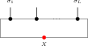

13 Parent Hamiltonians
For a translation-invariant matrix product state with tensor \(A\), the parent Hamiltonian is the translation-invariant sum of local terms, each the orthogonal projector onto the complement of the length-\(L\) local space \(G_L(A) = \mathrm{im}(\Gamma _L)\). This is the space \(\mathcal G_L^A\) of [ PGVWC07 ] ; we write \(\Gamma _L(X)(\sigma ) = \operatorname{tr}(A^\sigma X)\), which is the same as the source convention \(\operatorname{tr}(XA^\sigma )\) by cyclicity of the trace. We follow the construction of [ PGVWC07 ] and [ CPGSV21 ] , identifying the \(N\)-site space with functions on the computational basis,
rather than as an explicit tensor product.
The chapter establishes the ground-space structure in increasing generality. For an injective tensor, when \(N\ge 2\) and \(1{\lt}L\le N\), the parent Hamiltonian is frustration-free and the periodic MPS vector \(V^{(N)}(A)\) is its unique ground state, obtained from the intersection property of the local ground spaces. For a normal tensor the corresponding conclusion follows, under the stated closure-property and length hypotheses, from the inverting-and-growing-back argument at the injectivity length. The nearest-neighbor section separates the translated parent-term commutation and zero-energy equations for \(V^{(N)}(A)\) from the source ground-space spanning clause in the pure-state theorem relating renormalization fixed points, zero correlation length, and nearest-neighbor commuting parent Hamiltonians in [ CPGSV16 ] . The spectral-gap section records the source anticommutator martingale condition for overlapping local terms, together with cyclic norm-compression estimates as sufficient stronger hypotheses. For a tensor in block-injective canonical form \(A^i = \bigoplus _j \mu _j A_j^i\) with a basis of normal tensors \(\{ A_j\} \), [ CPGSV21 , Theorem IV.16 ] and [ PGVWC07 , Theorem 12 ] state that the periodic parent-Hamiltonian ground space is spanned by the vectors \(\{ V^{(N)}(A_j)\} \). The sections below record the open-segment recursion and the intersection and closure steps, together with separate conditional statements for the block-diagonal boundary-condition comparison in the periodic ring.
13.1 The \(N\)-site Hilbert space
For local dimension \(d\) and chain length \(N\), the \(N\)-site Hilbert space is
This is the computational-basis identification used throughout the chapter for periodic-chain states.
13.2 Local ground space \(G_L(A)\)
Fix an MPS tensor \(A = \{ A^i\} _{i=0}^{d-1}\) with \(A^i \in M_{D}(\mathbb {C})\) and a block length \(L \ge 1\). For a word \(w = (i_1,\ldots ,i_L)\), write \(A^w := A^{i_1}\cdots A^{i_L}\). The boundary-condition parametrization is
where \(A^{\sigma }\) abbreviates \(A^{\sigma (0)}\cdots A^{\sigma (L-1)}\). By cyclicity of the trace this is the same as the convention of [ PGVWC07 ] , namely \(\operatorname{tr}(XA^\sigma )\) for the local space \(\mathcal G_L^A\).
The map \(\Gamma _L\) above is a \(\mathbb {C}\)-linear map
In tensor-network notation,

the upper chain denotes the word tensor \(A^\sigma \) with open physical indices \(\sigma _1,\ldots ,\sigma _L\), and the lower red node denotes the boundary matrix \(X\) inserted on the closing virtual bond before taking the trace. The chain length \(L\) is fixed by the surrounding formula, not by an extra label inside the diagram.
For every boundary matrix \(X \in M_{D}(\mathbb {C})\) and every length-\(L\) word \(\sigma \),
The local ground space is the image
For every \(L\),
Since \(G_L(A)\) is the range of a linear map from \(M_{D}(\mathbb {C})\),
The above coefficient space satisfies
If \(d^L {\gt} D^2\), then \(G_L(A)\) is a proper subspace of the local Hilbert space:
13.3 Parent interaction and chain Hamiltonian
The canonical parent interaction at range \(L\) is
The sources also allow any positive local interaction with this kernel; the orthogonal projector is the canonical representative used here.
Let
be the canonical computational-basis identification. The local ground space under this \(\ell ^2\) identification is
For \(v\in \ell ^{2}(\{ 0,\ldots ,d{-}1\} ^{L})\),
This is the defining equation \(G_L^{\mathrm{ES}}(A)=\iota _L(G_L(A))\).
The parent interaction at range \(L\) is the canonical orthogonal projector
on the local \(L\)-site space.
For any \(v \in G_L(A)\), we have \(h_L(A)\, v = 0\).
Since \(h_L(A)\) is the orthogonal projector onto \(G_L(A)^\perp \), it annihilates every element of \(G_L(A)\).
For \(\sigma \in \{ 0,\ldots ,d{-}1\} ^{N}\) and a starting site \(i\), write
for the word defined by
If \(L \le N\) and \(\tau \in \{ 0,\ldots ,d{-}1\} ^{L}\), write
for the configuration defined by
The index \(r\) in the first case is unique because \(L\le N\).
If \(L \le N\), then restricting to the same cyclic interval after prescribing its values recovers the inserted word:
If \(L \le N\), then prescribing on a cyclic interval the values already carried by \(\sigma \) leaves \(\sigma \) unchanged:
Case-split on whether the offset \((k - i + N) \bmod N\) lies in \([0,L)\): inside the cyclic interval the prescribed value is the original value of \(\sigma \); outside the interval both sides already agree with \(\sigma \).
For a periodic chain of length \(N\), the parent Hamiltonian is the sum of translated copies of the local interaction.
For each site index \(i \in \{ 0,\ldots ,N{-}1\} \), the translated local term is determined by
The chain Hamiltonian is
A vector \(\psi \) is a frustration-free ground state of the parent Hamiltonian when each local interaction annihilates it:
For any window of \(L\) consecutive sites starting at position \(i\) in an \(N\)-site periodic chain (\(L \le N\)), the restriction of the periodic MPS vector \(V^{(N)}(A)\) to that window lies in \(G_L(A)\).
The boundary matrix is the product of \(A\)-matrices on the complement sites. Trace cyclicity rotates the full \(N\)-site product so that window indices come first, matching the ground-space map definition.
For each site \(i\), \(h_i\, V^{(N)}(A) = 0\).
Combines periodic-MPS-vector window membership with the fact that the parent interaction annihilates ground-space elements.
For every \(N\) with \(L\le N\), the periodic MPS vector satisfies
Sum of zeros, since each local term annihilates the periodic MPS vector.
The periodic MPS vector is a frustration-free ground state: for every site \(i\),
Immediate from Lemma 13.20.
13.4 Intersection property and unique ground state
This section develops the intersection property of local ground spaces for injective MPS and the resulting uniqueness of the ground state on the periodic chain.
13.4.1 Restriction maps
Given a state \(\psi \) on \(L+1\) sites, we define two restriction maps.
Appending a last letter to a word corresponds to right multiplication by the corresponding tensor letter, while prepending a first letter corresponds to left multiplication. The restriction maps are the associated linear maps on the state spaces under the computational-basis identification, together with their pointwise formulas.
Fix the last physical index \(j\):
Fix the first physical index \(i\):
A state \(\psi \) on \(L+1\) sites satisfies the left ground condition if for every \(j\), the state obtained by fixing the last index to \(j\) lies in \(G_L(A)\).
A state \(\psi \) on \(L+1\) sites satisfies the right ground condition if for every \(i\), the state obtained by fixing the first index to \(i\) lies in \(G_L(A)\).
13.4.2 Forward direction: ground space restricts
If \(\psi \in G_{L+1}(A)\), i.e. \(\psi (\sigma ) = \operatorname{tr}(A^\sigma X)\) for some \(X\), then for each \(j\), the state obtained by fixing the last index to \(j\) lies in \(G_L(A)\) with witness \(A^j X\).
The restriction simply absorbs the last tensor into the boundary matrix:
Direct computation: \(\psi (\sigma _1,\ldots ,\sigma _L,j) = \operatorname{tr}(A^{\sigma _1}\cdots A^{\sigma _L} \cdot A^j \cdot X) = \Gamma _L(A^j X)(\sigma )\).
If \(\psi \in G_{L+1}(A)\) with \(\psi (\sigma ) = \operatorname{tr}(A^\sigma X)\), then for each \(i\), the state obtained by fixing the first index to \(i\) lies in \(G_L(A)\) with witness \(X A^i\).
On the right restriction one first rotates the trace and then reads the resulting boundary matrix on the shortened window:
By trace cyclicity: \(\psi (i,\sigma _1,\ldots ,\sigma _L) = \operatorname{tr}(A^i A^{\sigma } X) = \operatorname{tr}(A^{\sigma } \cdot X A^i) = \Gamma _L(X A^i)(\sigma )\).
13.4.3 Injectivity of the ground-space map
If \(A\) is injective and \(L \ge 1\), then \(\Gamma _L\) is injective.
If \(\Gamma _L(X) = 0\) then \(\operatorname{tr}(A^\sigma X) = 0\) for every length-\(L\) word \(\sigma \). Since \(A\) is injective, the products \(\{ A^\sigma \} _\sigma \) span \(M_{D}(\mathbb {C})\), so the trace pairing gives \(X = 0\).
If the length-\(L\) products \(\{ A^\sigma : |\sigma | = L\} \) span \(M_{D}(\mathbb {C})\), then \(\Gamma _L\) is injective.
If \(\Gamma _L(X) = 0\), then \(\operatorname{tr}(A^\sigma X) = 0\) for every word \(\sigma \) of length \(L\). The spanning hypothesis turns this into \(\operatorname{tr}(MX) = 0\) for every \(M \in M_{D}(\mathbb {C})\), and the trace pairing gives \(X = 0\).
If the length-\(L_0\) products span the full matrix algebra,
then \(\Gamma _{L_0}\) is injective.
The hypothesis is precisely the fixed-length spanning condition needed by Theorem 13.31.
If \(A\) is injective and \(L \ge 1\), then \(\dim G_L(A) = D^2\).
The upper bound \(\dim G_L(A) \le D^2\) is Lemma 13.5. Injectivity of \(\Gamma _L\) gives \(\dim G_L(A) = \dim M_{D}(\mathbb {C}) = D^2\).
13.4.4 The intersection property
If \(A\) is injective and \(L \ge 2\), then the nontrivial inclusion in the intersection property holds:
The “inverting and growing back” argument compares the left and right restrictions on their common \((L-1)\)-site overlap and then reconstructs the full \((L+1)\)-site word from a single boundary matrix:
From the right ground condition, for each physical index \(i\) there exists a unique \(Y_i \in M_{D}(\mathbb {C})\) (by injectivity of \(\Gamma _L\)) such that \(\psi (i,\sigma ) = \operatorname{tr}(A^\sigma Y_i)\).
Similarly, from the left ground condition, for each \(j\) there exists a unique \(Z_j\) with \(\psi (\sigma ,j) = \operatorname{tr}(A^\sigma Z_j)\).
Matching on the \((L{-}1)\)-site overlap and using nondegeneracy of the trace pairing: \(A^j Y_i = Z_j A^i\) for all \(i,j\).
Since \(A\) is injective, the matrices \(\{ A^j\} \) span \(M_{D}(\mathbb {C})\) (Definition 2.28), so \(\mathbb {1}= \sum _j c_j A^j\) for some coefficients \(c_j \in \mathbb {C}\). Then \(Y_i = \mathbb {1}\cdot Y_i = \sum _j c_j A^j Y_i = \sum _j c_j Z_j A^i = X' A^i\), where \(X' := \sum _j c_j Z_j\).
By trace cyclicity, \(\psi (\sigma ) = \operatorname{tr}(A^\sigma X')\), so \(\psi \in G_{L+1}(A)\).
For injective \(A\) and \(L \ge 2\):
equivalently \(\psi \in G_{L+1}(A) \iff \psi \in G_L^{\mathrm{left}} \cap G_L^{\mathrm{right}}\).
Immediate from the two forward-direction lemmas and Theorem 13.34.
13.4.5 Unique ground state
Contiguous and cyclic interval restrictions
For a non-wrapping interval \([s,s+M-1] \subseteq \{ 0,\ldots ,N-1\} \) and a full configuration \(\rho \) supplying the complementary values, the restriction map is
The listed identities are the equations for \(s=0\), \(M=N\), for deleting the first or last site, and for first fixing \(K\) sites and then restricting to \([s+K,s+K+L-1]\).
On the periodic chain, for a full configuration \(\rho \) supplying the complementary values, put
The restriction to the cyclic interval beginning at \(i\) is
with all site labels read modulo \(N\). If \(L\le N\), this is the same configuration as \(\rho ^{[i,i+L-1]\leftarrow \omega }\). If two boundary conditions agree whenever \(\delta _i(k)\ge L\), their restrictions are equal. In particular, filling the interval inside the outside configuration leaves the restriction unchanged:
For every \(r{\lt}L\), the inserted word is recovered:
Here site labels are taken modulo \(N\). The remaining listed identities say that deleting the final site of an \((L+1)\)-interval gives the \(L\)-interval beginning at \(i\); if \(L+1\le N\), deleting the first site gives the \(L\)-interval beginning at \(i+1\); and the cyclic formula agrees with the contiguous formula when the interval does not wrap around the ring.
If a cyclic \((L+1)\)-window is represented by a boundary matrix \(Y\), then deleting one endpoint gives
Hence two adjacent cyclic windows whose restrictions agree on the common length-\(L\) overlap have boundary matrices satisfying
Consequently, for a finite chain of adjacent overlaps indexed by \(0\le r{\lt}n\),
one has
In particular, if the two endpoint words are named by the equations
with site labels read modulo \(N\), then the same transport identity is written as
The first two identities are the cyclic first- and last-site deletion identities, followed by the corresponding ground-space restriction formulas. For adjacent windows, equality of the completed outside configurations gives the common-overlap equality
Injectivity of \(\Gamma _L\) gives \(Y_0A^a=A^bY_n\). Iterating the displayed adjacent identity gives the word-product identity.
If an \(N\)-site state satisfies the \(L\)-site ground condition on every non-wrapping contiguous window (with \(L \ge 2\)), then it lies in \(G_N(A)\).
The induction repeatedly merges two neighbouring admissible windows \([i,i+L-1]\) and \([i+1,i+L]\) into the larger window \([i,i+L]\) by applying Theorem 13.34 to their common overlap \([i+1,i+L-1]\).
Fix a prefix \(u\in \{ 0,\ldots ,d-1\} ^K\). The suffix restriction of an \((K+L)\)-site state \(\psi \) is the \(L\)-site state given by
A state \(\psi \) on \(K+L\) sites lies in the suffix ground condition if every fixed prefix \(u\) gives a suffix state in \(G_L(A)\).
If \(\psi \in G_{K+L}(A)\), then every fixed-prefix suffix restriction of \(\psi \) lies in \(G_L(A)\). For a vector in \(G_{L+1}(A)\), fixing either endpoint gives the expected left or right multiplication of its boundary matrix.
Write \(\psi (\rho ) = \operatorname{tr}(A^\rho X)\) for a boundary matrix \(X\). Fixing the final site gives the boundary matrix \(A^jX\), while fixing the first site gives \(XA^i\) by cyclicity of the trace. Fixing a prefix \(u\) gives
so the suffix restriction again has the form of a ground-space vector.
Assume \(\psi \) on \(K+L_0+1\) sites satisfies the left ground condition on the first \(K+L_0\) sites and the suffix ground condition on every fixed prefix of length \(K\). Then there exist matrices \((Z_j)_j\) and \((Y_u)_u\) such that
and for all \(j\) and \(u\),
Choose \(Z_j\) from the long left-window condition and \(Y_u\) from the suffix ground condition. The two restrictions give the same vector in \(G_{L_0}(A)\):
Injectivity of \(\Gamma _{L_0}\), obtained from \(L_0\)-block injectivity, gives \(Z_j A^u = A^j Y_u\).
Assume \(A\) is \(L_0\)-block-injective with \(L_0 {\gt} 0\). If matrices \((Z_j)_j\) satisfy
for every word \(\sigma \) of length \(K\), then there exists a matrix \(X\) such that \(Z_j = A^j X\) for all \(j\).
For \(K = 1\), the hypothesis gives \(Z_j A^i = A^j Y_i\) for every letter \(i\). Every blocked word of length \(L_0\) is nonempty, so this identity extends to the coefficients of the blocked tensor \(A^{[L_0]}\). Since \(A^{[L_0]}\) is injective, the identity matrix is a linear combination of those blocked coefficients, and substituting this decomposition yields \(Z_j = A^j X\) for a common matrix \(X\). For larger \(K\), strip the first letter: for each \(i\), the matrices \(Z_j A^i\) satisfy the same compatibility hypothesis with words of length \(K - 1\), so the induction hypothesis reduces the problem to the case \(K = 1\).
Assume \(A\) is \(L_0\)-block-injective with \(L_0 {\gt} 0\). If an element \(\psi \) on \(K + L_0 + 1\) sites satisfies the left ground condition on the first \(K + L_0\) sites and the suffix ground condition on every prefix of length \(K\), then \(\psi \in G_{K + L_0 + 1}(A)\).
Lemma 13.43 produces matrices \((Z_j)_j\) and \((Y_u)_u\) with \(Z_j A^u = A^j Y_u\) for every prefix word \(u\) of length \(K\). Theorem 13.44 gives a common right factor \(X\) such that \(Z_j = A^j X\) for all \(j\). Therefore each last-site restriction of \(\psi \) agrees with the corresponding last-site restriction of the ground- space vector determined by \(X\). Since every configuration is obtained by adjoining its final letter to its initial \((K + L_0)\)-tuple, the two states coincide, so \(\psi \) lies in \(G_{K + L_0 + 1}(A)\).
Let \(A\) be \(L_0\)-block-injective with \(D \ge 1\) and \(L_0 {\gt} 0\). If an \(N\)-site state satisfies the ground-space constraint on every non-wrapping contiguous interval of length \(L_0+1\), for every fixed choice of the complementary sites, with \(N \ge L_0+1\), then it lies in \(G_N(A)\).
Induct on the extra length beyond \(L_0+1\). The induction hypothesis gives the long left-window ground condition after deleting the last site, while Definition 13.40 and the contiguous-interval restriction identities above identify every fixed-prefix suffix with one of the assumed length-\(L_0+1\) intervals. Theorem 13.45 then grows back the rightmost site.
Let \(S_m\subseteq (\mathbb {C}^d)^{\otimes m}\) be subspaces, and let \(0{\lt}L\le N\). Suppose that every non-wrapping length-\(L\) interval of \(\psi \), for every fixed choice of the complementary sites, lies in \(S_L\). Suppose also that, for every \(m\ge L\),
Then \(\psi \in S_N\).
Induct on the length \(m\) of a non-wrapping interval. The case \(m=L\) is the assumed local condition. If all length-\(m\) intervals lie in \(S_m\), then the two one-site restrictions of a length-\(m+1\) interval are adjacent length-\(m\) intervals. Hence the length-\(m+1\) interval lies in \(\mathbb {C}^d\otimes S_m\cap S_m\otimes \mathbb {C}^d\), and the displayed identity places it in \(S_{m+1}\). Taking \(m=N\) and the interval starting at the first site gives \(\psi \in S_N\).
Let \(S_m\subseteq (\mathbb {C}^d)^{\otimes m}\) be subspaces, and let \(0{\lt}L\le N\). Suppose that \(G_L(A)\subseteq S_L\). Suppose also that, for every \(m\ge L\),
Then the periodic local constraints imply
If \(\psi \in \mathcal G_{N,L}(A)\), then every length-\(L\) cyclic interval of \(\psi \) lies in \(G_L(A)\), and hence in \(S_L\). A non-wrapping interval is the cyclic interval starting at the same site. Therefore all non-wrapping length-\(L\) intervals lie in \(S_L\), and Lemma 13.47 gives \(\psi \in S_N\).
On a nonempty periodic chain, longer cyclic-window constraints imply all shorter cyclic-window constraints: if \(L' \le L \le N\), then \(\mathcal G_{N,L}(A) \subseteq \mathcal G_{N,L'}(A)\).
For every cyclic window vector \(v\in G_{L+1}(A)\) and every last letter \(b\),
Thus \(\mathcal G_{N,L+1}(A)\subseteq \mathcal G_{N,L}(A)\), and iteration gives the general antitonicity.
Let \(A\) be \(L_0\)-block-injective with \(L_0{\gt}0\) and \(D \ge 1\). If an \(N\)-site periodic-chain state satisfies all cyclic ground-space constraints at some range \(L_0+1 \le L \le N\), then it lies in the open-chain ground space \(G_N(A)\).
13.5 Periodic-boundary comparison for injective tensors
On the periodic ring the two cyclic supports that cross the periodic-boundary cut expose the same complementary word, and matching their boundary matrices forces \(X\) to commute with every \(A^j\). This section derives the boundary-crossing compatibilities \(C^+_\tau A^j X = Y_\tau A^j\) and \(X A^j C^-_\tau = A^j Y_\tau \) and combines them into the commutation \(X A^j = A^j X\).
Assume \(A\) is \(L_0\)-block-injective with \(L_0{\gt}0\) and \(M \ge L_0\). If the reduced cyclic interval crossing the last site has boundary matrices \(Y_\tau \), then for every physical letter \(j\) one has
where \(C^+_\tau \) is the complementary word seen by that cyclic interval.
The trace identity for this cyclic interval is tested against all words of length \(L_0\). Injectivity of \(\Gamma _{L_0}\), which follows from \(L_0\)-block injectivity, turns these test-word identities into the displayed matrix identity (??).
Assume \(A\) is \(L_0\)-block-injective with \(L_0{\gt}0\) and \(M \ge L_0\). If the second boundary-crossing reduced cyclic interval has boundary matrices \(Y_\tau \), then
for every physical letter \(j\), where \(C^-_\tau \) is the complementary word seen from the second cyclic position.
Factor the cyclic word at the second cyclic position, rotate the trace, and use injectivity of \(\Gamma _{L_0}\) to remove the length-\(L_0\) test word.
Let \(A\) be \(L_0\)-block-injective with \(L_0{\gt}0\) and \(D \ge 1\). Suppose \(\psi \in \mathcal G_{N,L}(A)\), \(N \ge 2\), \(L_0 {\lt} L \le N\), and \(\psi = \Gamma _N(X)\) for a boundary matrix \(X\). Then there are two families of boundary matrices \(Y^+_\tau \) and \(Y^-_\tau \), indexed by fixed complement values \(\tau \), such that for every physical letter \(j\),
where \(C^+_\tau \) and \(C^-_\tau \) are the complementary words exposed by the two boundary-crossing cyclic intervals, both of reduced length \(L_0+1\).
First use Lemma 13.49 to reduce the cyclic constraints from range \(L\) to range \(L_0+1\). Then apply the two cyclic-interval compatibility lemmas at the two boundary positions to obtain the displayed one-sided identities (??).
Let \(A\) be \(L_0\)-block-injective with \(L_0{\gt}0\), \(D\ge 1\), and \(L_0\le M\). Suppose \(\psi =\Gamma _{M+1}(X)\), and suppose matrices \(Y_i(\tau )\) represent the length-\((L_0+1)\) cyclic restrictions
Then, for every physical letter \(j\) and boundary condition \(\tau \),
Let \(A\) be \(L_0\)-block-injective with \(L_0{\gt}0\), \(D\ge 1\), and \(L_0\le M\). Suppose \(\psi =\Gamma _{M+1}(X)\), and suppose matrices \(Y_i(\tau )\) represent the length-\((L_0+1)\) cyclic restrictions
For every boundary letter \(\eta \), every physical letter \(j\), and every complementary word \(\mu \),
On a chain of length \(N=M+1\), with \(L_0\le M\), fix a physical letter \(\eta \) used outside the complementary sites and a word \(\mu \) of length \(M+1-(L_0+1)\). Write \(\tau ^+_\eta (\mu )\) for the boundary condition at the support crossing the last site and \(\tau ^-_\eta (\mu )\) for the boundary condition at the second boundary-crossing support. Their exposed complements are both exactly \(\mu \).
Put the same letter \(\eta \) on the remaining sites. Fill the physical sites \(L_0,\ldots ,M-1\) with \(\mu \) for the support crossing the last site, and fill the sites \(1,\ldots ,M-L_0\) with \(\mu \) for the second boundary-crossing support. The two complement-extraction identities are then immediate from the index arithmetic. The same outside-site calculation gives, for any \(\rho \) with \(\rho _{k+L_0}=\mu _k\),
and, for any \(\rho \) with \(\rho _{k+1}=\mu _k\),
Let \(A\) be \(L_0\)-block-injective, with \(L_0{\gt}0\), and let \(L_0\le M\). Suppose two length-\((L_0+1)\) restrictions of a state \(\psi \) at the same cyclic support are represented by
If these two restrictions are equal, then for every physical letter \(j\),
In particular, the last-site boundary-crossing condition satisfies
and the second boundary-crossing condition satisfies
Consequently, for every word \(\sigma \) of length \(L_0\), the two displayed implications remain true after right multiplication by \(A^\sigma \).
Apply the first-letter restriction to both equal length-\((L_0+1)\) restrictions. The two resulting length-\(L_0\) vectors are represented by \(\Gamma _{L_0}(Y_\rho A^j)\) and \(\Gamma _{L_0}(Y_\tau A^j)\), and block injectivity makes \(\Gamma _{L_0}\) injective. The two displayed special cases follow from Lemma 13.56. The length-\(L_0\) word forms are obtained by multiplying these equations on the right by \(A^\sigma \).
Let \(A\) be \(L_0\)-block-injective, with \(L_0{\gt}0\), and let \(L_0\le M\). Let \(\psi \) be a state on the chain of length \(M+1\), and let the matrices \(Y_i(\tau )\) represent its length-\((L_0+1)\) cyclic restrictions:
Fix a boundary letter \(\eta \) and a complementary word \(\mu \). Let \(\rho ^+\) and \(\rho ^-\) be two boundary conditions satisfying
If the adjacent-window comparison gives, for every physical letter \(j\) and every word \(\sigma \) of length \(L_0\),
then the same product equation holds for \(\tau ^+_\eta (\mu )\) and \(\tau ^-_\eta (\mu )\):
By Lemma 13.57,
Multiplying on the right by \(A^\sigma \) and applying the hypothesis gives the displayed product equation.
Let \(A\) be \(L_0\)-block-injective, with \(L_0{\gt}0\), and let \(L_0\le M\). Let \(\psi \) be a state on the chain of length \(M+1\), and let the matrices \(Y_i(\tau )\) represent its length-\((L_0+1)\) cyclic restrictions:
Fix a boundary letter \(\eta \) and a complementary word \(\mu \). Suppose that, for each physical letter \(j\) and word \(\sigma \) of length \(L_0\), boundary conditions \(\rho ^+_{j,\sigma }\) and \(\rho ^-_{j,\sigma }\) satisfy, for every complementary position \(k\),
If, for every \(j\) and \(\sigma \),
then, for every \(j\) and \(\sigma \),
Fix \(j\) and \(\sigma \). Lemma 13.57 gives
Multiply the two identities on the right by \(A^\sigma \) and use the assumed product equation for the chosen pair \(j,\sigma \).
Let \(A\) be \(L_0\)-block-injective with \(L_0{\gt}0\), and let \(L_0\le M\). Let \(\psi \) be a state on the chain of length \(M+1\). Suppose that matrices \(Y_r(\rho )\), for \(0\le r\le L_0-1\), represent the length-\((L_0+1)\) cyclic restrictions beginning at the sites \(M+1-L_0+r\):
Then
For \(L_0=1\), both products are empty.
Use Lemma 13.38 for the \(L_0-1\) adjacent restrictions starting at \(i_0=M+1-L_0\). For \(0\le r{\lt}L_0-1\), the two endpoint words are determined by
Substituting these two words in the iterated transport identity gives the displayed product equation.
Let \(A\) be \(L_0\)-block-injective with \(L_0{\gt}0\), and let \(L_0\le M\). Let \(\psi \) be a state on the chain of length \(M+1\), and suppose matrices \(Y_i(\rho )\) represent the length-\((L_0+1)\) cyclic restrictions
Then, for every boundary condition \(\rho \),
For \(L_0=1\), both products are empty. The same equation remains true after multiplying both sides on the right by any matrix \(R\).
Apply Lemma 13.38 to the \(L_0-1\) restrictions beginning at \(M+1-L_0+r\), with
With \(i_0=M+1-L_0\), the site labels satisfy
hence, for \(r=0,\ldots ,L_0-2\),
Multiplying these \(L_0-1\) equations from left to right gives the displayed product equation. The right-multiplied form follows by multiplying this equality by \(R\).
Let \(A\) be \(L_0\)-block-injective with \(L_0{\gt}0\) and \(D\ge 1\), and let \(L_0\le M\). Let \(\psi =\Gamma _{M+1}(X)\), and suppose that matrices \(Y_i(\rho )\) represent all length-\((L_0+1)\) cyclic restrictions of \(\psi \). Then, for every boundary condition \(\rho \) and every physical letter \(j\),
For \(\rho =\tau ^-_\eta (\mu )\) this is the transport identity supplied by the adjacent-window argument, with the single factor \(A^j\) following \(Y_{M+1-L_0}(\tau ^-_\eta (\mu ))\). The padded identity, whose corresponding factor is \(A^jA^\sigma \), is supplied separately.
Lemma 13.61 gives
The one-sided equation for the window beginning at \(M\) gives
Substitution gives the displayed formula.
Let \(A\) be \(L_0\)-block-injective with \(L_0{\gt}0\), and let \(L_0\le M\). Let \(\psi \) be a state on the chain of length \(M+1\), and suppose matrices \(Y_i(\rho )\) represent the length-\((L_0+1)\) cyclic restrictions
Then, for every boundary condition \(\rho \),
Each side has \(M+2-L_0\) one-site factors, with site labels read modulo \(M+1\).
Apply Lemma 13.38 to the \(M+2-L_0\) restrictions beginning at \(M+r\) modulo \(M+1\). With \(i_0=M\), the site labels satisfy
The final window is
Substituting these site labels in the iterated product identity gives the displayed equation.
Fix a physical letter \(\eta \) used outside the complementary sites. Suppose the two one-sided boundary matrix families \(Y^+\) and \(Y^-\) have been extracted from the cyclic windows. If, for every word on the complementary sites \(\mu \), these boundary matrices agree on the boundary conditions built from \(\eta \),
then there is a single family \(Y_\mu \) satisfying
for all letters \(a,b\).
Define \(Y_\mu \) to be the first boundary matrix evaluated on the boundary condition \(\tau ^+_\eta (\mu )\). Lemma 13.56 rewrites the first cyclic-window complement as \(\mu \), while the assumed comparison at \(\tau ^-_\eta (\mu )\) rewrites the second boundary matrix to the same \(Y_\mu \).
Suppose a single family of boundary matrices \(Y_\mu \), indexed by words \(\mu \) on the complementary sites, satisfies the two one-sided identities
for every pair of physical letters \(a,b\). Then \(X\) commutes with every word product \(A^a A^\mu A^b\) obtained by adjoining one letter on each side of the word \(A^\mu \).
Multiply the second identity in (??) on the right by \(A^b\) and the first identity on the left by \(A^a\):
Let \(A\) be injective with \(D \ge 1\), and let \(\psi = \Gamma _{N}(X)\) for some boundary matrix \(X \in M_{D}(\mathbb {C})\). If every cyclic restriction of length \(L\) of \(\psi \) lies in \(G_{L}(A)\), with \(N \ge 2\) and \(1 {\lt} L \le N\), then, for every \(j = 0,\ldots ,d-1\),
The periodic boundary condition produces matrix identities of the form \(XMW=MY\) for arbitrary test matrices \(M\) and complementary words \(W\). Spanning first over the length-\((L-1)\) tails and then over the complementary words, injectivity forces \((XM-MX)W = 0\) for every \(W\), hence \(XM = MX\) for every matrix \(M\). In particular, \(X\) commutes with each letter \(A^{j}\).
13.6 Periodic unique ground state
This section gives three periodic ground-space facts: the span of the periodic MPS vector \(V^{(N)}(A) = \Gamma _N(\mathbb {1})\), its membership in every cyclic window constraint \(\mathcal G_{N,L}(A)\), and its nonvanishing for block-injective tensors. Together with the boundary-matrix commutation \(X A^j = A^j X\) of the previous section, these establish that the periodic ground space is spanned by \(V^{(N)}(A)\); the one-dimensionality conclusion is completed downstream.
The subspace spanned by the MPS vector \(V^{(N)}(A)(\sigma ) = \operatorname{tr}(A^{\sigma _0}\cdots A^{\sigma _{N-1}})\).
For every chain length \(N\),
\(V^{(N)}(A) \in G_N(A)\) for every \(N\), with boundary matrix \(X = I\).
\(V^{(N)}(A)(\sigma ) = \operatorname{tr}(A^\sigma ) = \operatorname{tr}(A^\sigma \cdot I) = \Gamma _N(I)(\sigma )\).
A finite-dimensional ground space \(S\) is one-dimensional if \(\dim S = 1\).
For finite-dimensional \(S\), \(\dim S = 1\) iff there exists a nonzero \(\psi _0 \in S\) such that every \(\psi \in S\) is of the form \(c\, \psi _0\).
Apply the standard finite-dimensional criterion that a nonzero space has dimension one exactly when all of its vectors are proportional to a single nonzero vector.
For \(N {\gt} 0\) and \(L \le N\), define the periodic parent-Hamiltonian ground space
where the condition \(\psi |_{[i,i+L-1]} \in G_L(A)\) means that for every choice of physical indices outside the window, the restriction of \(\psi \) to that window lies in \(G_L(A)\). The one-index notation \(G_L(A)\) denotes the local ground space \(\mathcal G_L\) of [ CPGSV21 , Section IV.C ] . The two-index notation \(\mathcal G_{N,L}(A)\) used here denotes the periodic intersection of those local constraints over all translated length-\(L\) windows on the \(N\)-site ring. When \(N = 0\) or \(L {\gt} N\), set \(\mathcal{G}_{N,L}(A) := \top \) by convention.
If \(0{\lt}N\), \(L\le N\), and \(\psi \in \mathcal G_{N,L}(A)\), then for every cyclic window and every outside configuration there is a boundary matrix \(Y\) such that the corresponding restricted \(L\)-site state is \(\Gamma _L(Y)\).
This is the defining cyclic-window condition for membership in \(\mathcal G_{N,L}(A)\), together with the definition of the local ground space as the range of \(\Gamma _L\).
If \(0 {\lt} N\) and \(L \le N\), then
If \(A\) is \(L_0\)-block-injective with \(L_0 {\gt} 0\), \(D \ge 1\), and \(N \ge L_0 + 1\), then \(V^{(N)}(A) \ne 0\) in the \(N\)-site space.
Suppose for contradiction that \(V^{(N)}(A) = 0\), i.e. \(\operatorname{tr}(A^\sigma ) = 0\) for every word \(\sigma \) of length \(N\). For any words \(w\) and \(u\) with \(|w| = N - L_0\) and \(|u| = L_0\), we have \(\operatorname{tr}(A^w A^u) = 0\). Since \(A\) is \(L_0\)-block-injective, \(\{ A^u : |u| = L_0\} \) spans \(M_{D}(\mathbb {C})\). By nondegeneracy of the trace pairing, \(A^w = 0\) for every \(|w| = N - L_0\). Repeating the argument with words of length \(N - 2L_0\) (since \(|w'| + L_0 = N - L_0\), the product \(A^{w'} A^{u_1}\) has length \(N - L_0\), so \(A^{w'} A^{u_1} = 0\) by the previous step) and iterating, we eventually reach \(\operatorname{tr}(A^u) = 0\) for \(|u| = L_0\), which gives \(I = 0\), a contradiction.
13.7 Injectivity-length reduction for the closure property
This section implements the inverting-and-growing-back reduction from [ CPGSV21 , Section IV.C ] : a commutation or annihilation relation for length-\(m\) word products is reduced to the injectivity length \(L_0\), then used in the periodic-boundary closure-property step. Throughout, \(A^w := A^{i_1}\cdots A^{i_L}\) denotes the product along a word \(w = (i_1,\ldots ,i_L)\), \(\Gamma _N\) sends a boundary matrix to its open-chain vector, and \(A\) being \(L_0\)-block-injective means \(\operatorname{span}\{ A^u : |u|=L_0\} = M_{D}(\mathbb {C})\), so a relation valid on every length-\(L_0\) product extends by linearity to all of \(M_{D}(\mathbb {C})\).
Assume \(A\) is \(L_0\)-block-injective with \(L_0 {\gt} 0\). Let \(\{ Z_u\} _{|u|=L_0}\) be a family indexed by words of length \(L_0\). If for some \(K \ge 0\) and every suffix word \(w\) of length \(K\) there exists \(Y_w \in M_{D}(\mathbb {C})\) such that, for every word \(u\) of length \(L_0\),
then there exists \(X \in M_{D}(\mathbb {C})\) with \(Z_u = A^u X\) for every word \(u\) of length \(L_0\).
Induct on \(K\). For \(K = 0\) the empty suffix gives \(Z_u = A^u Y_{\emptyset }\). For the successor step, fix the first physical index \(i\) and apply the induction hypothesis to the shortened suffix. This gives a matrix \(X_i\) satisfying
for every word \(u\) of length \(L_0\). Extending this letter equation to all length-\(L_0\) words and decomposing \(\mathbb {1}\) in the spanning family \(\{ A^u : |u| = L_0\} \) yields a common factor \(X\).
Let \(A\) be a tensor whose length-\(K\) word products span \(M_{D}(\mathbb {C})\). Let \(\{ F_b\} _{b\in B}\) and \(\{ Z_b\} _{b\in B}\) be two families of matrices. If, for every length-\(K\) word \(w\), there is a matrix \(Y_w\) such that, for every \(b\in B\),
then there is a single matrix \(Y\) such that, for every \(b\in B\),
Suppose \(Z_bM_1=F_bY_1\) and \(Z_bM_2=F_bY_2\) for every \(b\in B\). Then
For a scalar \(c\),
Thus the displayed identity holds for every matrix in the span of the length-\(K\) word products. Since this span is all of \(M_{D}(\mathbb {C})\), apply it to the identity matrix.
If \(A\) is \(L_0\)-block-injective with \(L_0 {\gt} 0\), \(m \ge L_0\), and \(X \in M_{D}(\mathbb {C})\) commutes with every length-\(m\) product \(A^\omega \), then \(X\) already commutes with every length-\(L_0\) product \(A^u\).
Write each length-\(m\) word as a concatenation \(uw\) with \(|u| = L_0\) and \(|w| = m - L_0\). The hypothesis gives
Thus the family \(Z_u := X A^u\) satisfies the hypothesis of Theorem 13.76. One obtains \(X A^u = A^u R\) for all \(|u| = L_0\). Decomposing \(\mathbb {1}\) in the span of the length-\(L_0\) words shows \(R = X\), hence \(X A^u = A^u X\).
If \(A\) is \(L_0\)-block-injective with \(L_0 {\gt} 0\), \(m \ge L_0\), and \(X \in M_{D}(\mathbb {C})\) commutes with every length-\(m\) word product, then \(X\) commutes with every matrix in \(M_{D}(\mathbb {C})\).
By Theorem 13.78, \(X\) commutes with every length-\(L_0\) word product. These products span \(M_{D}(\mathbb {C})\) by block injectivity, so linearity gives \(XM = MX\) for every \(M \in M_{D}(\mathbb {C})\).
If a boundary matrix \(X\) commutes with every word product of length \(m\), then it commutes with every word product whose length is a multiple \(q\, m\).
Proceed by induction on \(q\). For \(q=0\), the claim is trivial. For the inductive step, let a word of length \((q+1)m\) be given and write it as a length-\(m\) prefix followed by a length-\(q\, m\) suffix. The prefix commutes with \(X\) by hypothesis, and the suffix commutes by the induction hypothesis.
If \(A\) is \(L_0\)-block-injective, \(q \ge 1\), and \(k \le qL_0\), then the two one-sided annihilation statements are:
The left-handed form is
The hypothesis \(\operatorname{span}\{ A^u: |u|=L_0\} =M_{D}(\mathbb {C})\) implies the same spanning statement at every positive multiple \(qL_0\). Each length-\(qL_0\) word factors as a length-\(k\) prefix followed by padding, so \(Z\) annihilates all generators of the full span and hence annihilates the identity. For the left-handed form, factor each length-\(qL_0\) word as a prefix followed by a length-\(k\) suffix and use the same spanning argument.
Let \(A\) be \(L_0\)-block-injective with \(L_0{\gt}0\). If two boundary matrices have the same product with every one-site tensor on one fixed side, then the two boundary matrices are equal.
If \(Y_1 A^j = Y_2 A^j\) for every physical index \(j\), then for every nonempty word \(w\), induction on the word gives
Since \(A\) is \(L_0\)-block-injective,
Thus the left multiplication maps \(M\mapsto Y_1 M\) and \(M\mapsto Y_2 M\) are equal on \(M_{D}(\mathbb {C})\), and evaluating on the identity gives \(Y_1=Y_2\). The other one-sided statement is the same argument, with right multiplication in place of left multiplication.
Under the hypotheses of Theorem 13.79, one has \(X A^i = A^i X\) for every physical index \(i\).
Apply Theorem 13.79 with \(M = A^i\).
Let \(A\) be injective after blocking \(L_0{\gt}0\) sites, and let \(m \ge L_0\). If a boundary matrix \(X\) commutes with every length-\(m\) word product, then
Theorem 13.79 makes \(X\) commute with the whole matrix algebra. The center of \(M_{D}(\mathbb {C})\) consists of scalar matrices, so \(X=c\mathbb {1}\), and therefore \(\Gamma _N(X)=cV^{(N)}(A)\).
Let \(A\) be injective after blocking \(L_0{\gt}0\) sites. If \(X\) commutes with every word product of some positive length \(m\), then
Let \(A\) be injective after blocking \(L_0{\gt}0\) sites. Suppose there are matrices \(Y_\mu \) such that
for every pair of physical letters \(a,b\). Then
The identities in (??) give commutation with all words of length \(|\mu |+2\), a positive length. The positive-length containment theorem then applies.
Let \(A\) be injective after blocking \(L_0{\gt}0\) sites, and fix a physical letter \(\eta \) used outside the complementary sites. Suppose that, for every boundary condition \(\tau \) and every physical letter \(j\),
where \(C^+_\tau \) and \(C^-_\tau \) are the complementary words exposed by the two boundary-crossing cyclic windows. Suppose also that the two boundary matrices satisfy
for every word \(\mu \) on the complementary sites, then
Let \(A\) be injective after blocking \(L_0{\gt}0\) sites and let \(D \ge 1\). Assume \(N \ge 2\) and \(L_0 {\lt} L \le N\). Suppose that, for every physical letter \(\eta \) used in the two boundary conditions and every boundary matrix obtained from an \(N\)-site chain ground state, the identities
hold for every physical letter \(j\) and every complementary word \(\mu \), and are supplemented, for every \(\mu \), by
Then
The cyclic-to-open-chain reduction writes any chain ground state as \(\Gamma _N(X)\). The two boundary-crossing cyclic windows give
Together with
Theorem 13.87 finishes.
13.8 Periodic-boundary comparison for normal tensors
This section isolates the closure-property part of the periodic-boundary argument for normal tensors. In the source proof, after the intersection property has grown the open interval, the same inverting-and-growing-back argument is applied when closing the boundaries [ CPGSV21 , Section IV.C ] . For a vector \(\psi =\Gamma _{M+1}(X)\), the closure property asks that the two boundary-crossing restrictions \(\operatorname {Res}^{\tau ^+_\eta (\mu )}_{M,L_0+1}(\psi )\) and \(\operatorname {Res}^{\tau ^-_\eta (\mu )}_{M+1-L_0,L_0+1}(\psi )\) agree. The symbols \(\tau ^\pm _\eta (\mu )\) index these restrictions, and the matrices \(Y_i(\tau )\) below satisfy
Once the one-sided boundary products are known, equality of the restrictions follows from the boundary-matrix commutation relation \(XA^j=A^jX\) for every physical letter \(j\). The block-window identity
is derived from the cyclic-window constraints crossing the periodic cut.
Let \(A\) be an MPS tensor and let \(L_0,K\ge 0\). Let \(X\) be a matrix, and let \(Y_{c_b}\) be a matrix for each iterated block index \(c_b\) of the complement. Suppose that, for every block letter \(b\) of the alphabet \(\{ 0,\ldots ,d{-}1\} ^{L_0}\) and every iterated block index \(c_b\) of the complement, with \(w(b)\) the length-\(L_0\) word of \(b\) and \(\widetilde{w(c_b)}\) the length-\(L_0K\) complement word obtained by concatenating the blocks of \(c_b\),
Then there is a family \(Y'_c\), indexed by the length-\(L_0K\) words \(c\), with
for every length-\(L_0\) word \(s\) and every length-\(L_0K\) word \(c\).
Each length-\(L_0\) word \(s\) is the word \(w(b)\) of its block letter \(b\), and each length-\(L_0K\) word \(c\) regroups into \(K\) blocks, recovering it as the concatenated complement word \(\widetilde{w(c_b)}\) of an iterated block index \(c_b\); both identifications are bijective. Substituting these representations into the hypothesis and setting \(Y'_c=Y_{c_b}\) gives the asserted equation for every \(s\) and \(c\).
Let \(A\) be \(L_0\)-block-injective with \(L_0{\gt}0\). Let \(X\) be a boundary matrix, and let \(Y_v\) be a matrix for each complementary word \(v\) of length \(K\). Suppose that, for every word \(u\) of length \(L_0\) and every word \(v\) of length \(K\),
Then, for every physical letter \(j\),
This is the boundary-matrix commutation step obtained from the equations \(X A^u A^v=A^uY_v\), for all length-\(L_0\) words \(u\) and all length-\(K\) words \(v\), as in [ CPGSV21 , Section IV.C, lines 2049–2090 ] .
By Lemma 8.7,
Hence, for every \(M\in M_{D}(\mathbb {C})\) and every complementary word \(v\) of length \(K\), the displayed hypothesis extends by linearity in the length-\(L_0\) block to
Taking \(M=\mathbb {1}\) gives
Taking \(M=A^j\) and substituting the preceding identity gives, for every word \(v\) of length \(K\),
Since \(K\le (K+1)L_0\) and \(K+1\ge 1\), Lemma 13.81 gives \(X A^j-A^jX=0\).
Let \(A\) be a tensor with virtual dimension at least one, and let \(L_0{\gt}0\) and \(L_0{\lt}M\). Let
and assume that every cyclic restriction of length \(L_0+1\) belongs to \(G_{L_0+1}(A)\). Then there are boundary matrices \(Y_\nu \), indexed by nonempty complementary words \(\nu \) of length \(M+1-(L_0+1)\), such that, for every physical letter \(j\) and every word \(\alpha \) of length \(L_0\),
Let \(Y_\nu \) be the matrix representing the cyclic restriction whose window begins at the last site. The cyclic word is
after deleting the first letter from the window and reading the complement, so the ground-space representation gives
Cyclicity of the trace gives
Therefore
Let \(A\) be a tensor with virtual dimension at least one whose single-site matrices span the full matrix algebra. Let \(L_0{\gt}0\) and \(L_0{\lt}M\), and let
If every cyclic restriction of length \(L_0+1\) belongs to \(G_{L_0+1}(A)\), then there are boundary matrices \(Y_\nu \), indexed by nonempty complementary words \(\nu \) of length \(M+1-(L_0+1)\), such that, for every word \(\alpha \) of length \(L_0\),
For every physical letter \(j\), Lemma 13.91 gives
Put
For every physical letter \(j\), the preceding identity gives
Since the matrices \(A^j\) span the full matrix algebra, the trace pairing gives
Hence \(X A^\alpha A^\nu =A^\alpha Y_\nu \).
Let \(A\) be \(L_0\)-block-injective with \(L_0{\gt}0\), \(L_0{\lt}M\), and \(D\ge 1\). Let
and assume that every cyclic restriction of length \(L_0+1\) belongs to \(G_{L_0+1}(A)\). Then there are boundary matrices \(Y_\nu \), indexed by nonempty complementary words \(\nu \) of length \(M+1-(L_0+1)\), such that, for every word \(\alpha \) of length \(L_0\) and every word \(\beta \) of length \(L_0\),
Choose representation matrices for every cyclic restriction of length \(L_0+1\). Fix \(\alpha \) and \(\nu \). The boundary-crossing equations move the matrix \(X\) through the first boundary letter. In local boundary notation this has the form
The adjacent boundary-window product then transports this comparison through the remaining \(L_0-1\) boundary letters:
Finally, the outside-label uniqueness lemma identifies the final boundary matrix with the matrix \(Y_\nu \) attached to the complementary word \(\nu \). Thus
Multiplying on the left by \(A^\beta \) and taking the trace gives the asserted identity for every length-\(L_0\) word \(\beta \).
Let \(A\) be \(L_0\)-block-injective. Let \(X\) be a boundary matrix, and let \(Y_\nu \) be a matrix for each complementary word \(\nu \) of length \(K\). Suppose that, for every word \(\alpha \) of length \(L_0\), every word \(\beta \) of length \(L_0\), and every complementary word \(\nu \),
Then, for every word \(\alpha \) of length \(L_0\) and every complementary word \(\nu \),
The trace identities say exactly that
for each fixed pair \((\alpha ,\nu )\). Since \(A\) is \(L_0\)-block-injective, \(\Gamma _{L_0}\) is injective by Lemma 13.32. Hence
Let \(A\) be \(L_0\)-block-injective with \(L_0{\gt}0\), \(L_0{\lt}M\), and \(D\ge 1\). Let
and assume that every cyclic restriction of length \(L_0+1\) belongs to \(G_{L_0+1}(A)\). Then there are boundary matrices \(Y_\nu \), indexed by nonempty complementary words \(\nu \) of length \(M+1-(L_0+1)\), such that for every word \(\alpha \) of length \(L_0\),
Let \(A\) be \(L_0\)-block-injective with \(L_0{\gt}0\). Let \(X\) be a boundary matrix, let \(W_\eta \) and \(V_\eta \) be matrix families indexed by a physical letter \(\eta \), and let \(\mu \) be a word. Suppose that, for every physical letter \(j\),
Suppose also that, for every \(\eta \) and every \(j\),
Then, for every \(\eta \) and every \(j\),
The commutation relation \(X A^j=A^jX\) extends by induction: for every word \(w\),
Hence the second one-sided equation gives, for every \(k\),
Lemma 13.82 gives \(V_\eta =A^\mu X\). The first one-sided equation then gives
Let \(A\) be \(L_0\)-block-injective with \(L_0{\gt}0\). Fix two matrix families \(Y^+\) and \(Y^-\) and the two reindexed boundary conditions \(\tau ^+_\eta (\mu )\) and \(\tau ^-_\eta (\mu )\). If, for every physical letter \(j\),
then
Apply Lemma 13.82 to the two matrices \(Y^+_{\tau ^+_\eta (\mu )}\) and \(Y^-_{\tau ^-_\eta (\mu )}\).
Let \(A\) be \(L_0\)-block-injective with \(L_0{\gt}0\) and \(L_0\le M\). If an outside configuration \(\rho \) has the same word \(\mu \) as \(\tau ^+_\eta (\mu )\) on the sites outside the last-site cyclic window, then the two matrices representing that restriction agree:
The same assertion holds for the second boundary-crossing window: if \(\rho \) has the same outside word as \(\tau ^-_\eta (\mu )\), then
This is the boundary-matrix independence step used to choose one representative outside configuration for each outside word in the closure-property matrix comparison.
Equality of the cyclic restrictions gives, for every physical letter \(j\),
Lemma 13.82 identifies the two matrices from these one-site products.
Let \(R_j\) be restriction to first letter \(j\):
For \(\phi ,\psi \in (\mathbb {C}^d)^{\otimes (L+1)}\),
At \((\sigma _0,\sigma _1,\ldots ,\sigma _L)\) the required equality is
Let \(L_0{\gt}0\) and \(L_0\le M\), and set
With \(R_j\) as in Lemma 13.99,
Apply Lemma 13.99 to the two length-\((L_0+1)\) restrictions, using the displayed family of first-letter equalities.
Let \(A\) be an MPS tensor, let \(L_0{\gt}0\), and let \(L_0\le M\). Suppose the two boundary-crossing restrictions of length \(L_0+1\) are represented by boundary matrices \(Y^+_{\eta ,\mu }\) and \(Y^-_{\eta ,\mu }\):
If, for every physical letter \(j\),
then
Fix \(j\) and take the first-letter restriction of the two displayed length-\((L_0+1)\) restrictions. These are
The one-site product equality gives, for every \(j\),
Lemma 13.99 identifies the two original restrictions.
Let \(L_0{\gt}0\) and \(L_0\le M\). Let \(Y_i(\tau )\) represent the length-\((L_0+1)\) cyclic restrictions of \(\psi \). Fix a complementary word \(\mu \). If, for every boundary letter \(\eta \) and physical letter \(j\),
then for every \(\eta \),
Apply Lemma 13.101 for each boundary letter \(\eta \), using the corresponding first-letter product equations.
Let \(A\) be \(L_0\)-block-injective with \(L_0{\gt}0\) and \(D\ge 1\), let \(L_0{\lt}M\), and let
For every boundary letter \(\eta \) and complementary word \(\mu \), the two restrictions crossing the periodic cut satisfy
The cyclic-window representation lemma gives matrices \(Y_M(\tau ^+_\eta (\mu ))\) and \(Y_{M+1-L_0}(\tau ^-_\eta (\mu ))\) such that
Theorem 13.120 gives, for every \(j\),
Lemma 13.101 identifies the two length-\((L_0+1)\) restrictions.
Let \(A\) be \(L_0\)-block-injective with \(L_0{\gt}0\), and let \(L_0\le M\). Let \(\psi \) be a state on the chain of length \(M+1\), and let \(Y_i(\tau )\) be matrices satisfying
Suppose that, for every outside letter \(\eta \),
Then there are boundary conditions \(\rho ^+_{j,\sigma }\) and \(\rho ^-_{j,\sigma }\) such that, for every complementary position \(k\),
and, for every physical letter \(j\) and every word \(\sigma \) of length \(L_0\),
For the product indexed by \(j\) and \(\sigma \), specialize the preceding equality at the outside letter \(\eta =j\). Take \(\rho ^+_{j,\sigma }=\tau ^+_j(\mu )\) and \(\rho ^-_{j,\sigma }=\tau ^-_j(\mu )\). The complement equations are the two identities of Lemma 13.56. Fix \(j\). Applying the first-letter restriction to the displayed equality gives
where the two sides are identified by Lemma 13.38. By Lemma 13.32,
Right multiplication by \(A^\sigma \) gives the asserted product equation.
Let \(A\) be \(L_0\)-block-injective with \(L_0{\gt}0\), and let \(L_0\le M\). Let \(\psi \) be a state on the chain of length \(M+1\), and let \(Y_i(\tau )\) be matrices satisfying
Fix a complementary word \(\mu \) of length \(M+1-(L_0+1)\). Suppose that, for every boundary letter \(\eta \) and every physical letter \(j\),
Then there are boundary conditions \(\rho ^+_{j,\sigma }\) and \(\rho ^-_{j,\sigma }\) such that, for every complementary position \(k\),
and, for every physical letter \(j\) and every word \(\sigma \) of length \(L_0\),
Let \(A\) be \(L_0\)-block-injective with \(L_0{\gt}0\), and let \(L_0\le M\). Fix a complementary word \(\mu \), a matrix \(X\), and a family of matrices \(Y_i(\tau )\). Suppose that, for every boundary letter \(\eta \), every physical letter \(j\), and every word \(\sigma \) of length \(L_0\),
Then, for every \(\eta \) and \(j\),
Fix \(\eta \) and \(j\), and set
The hypothesis gives, for every \(\sigma \) with \(|\sigma |=L_0\),
Since \(A\) is \(L_0\)-block-injective, the products \(A^\sigma \) with \(|\sigma |=L_0\) span the full matrix algebra. Applying Lemma 13.81 gives \(Z_{\eta ,j}=0\).
Let \(A\) be \(L_0\)-block-injective with \(L_0{\gt}0\), and let \(L_0\le M\). Fix a complementary word \(\mu \), a matrix \(X\), and a family of matrices \(Y_i(\tau )\). Suppose that, for every boundary letter \(\eta \), every physical letter \(j\), and every pair of words \(\sigma ,\alpha \) of length \(L_0\),
Then, for every \(\eta \), \(j\), and \(\sigma \),
Fix \(\eta \), \(j\), and \(\sigma \), and set
The hypothesis says that \(A^\alpha Z_{\eta ,j,\sigma }=0\) for every word \(\alpha \) of length \(L_0\). The left-handed form of Lemma 13.81 gives \(Z_{\eta ,j,\sigma }=0\).
Let \(A\) be \(L_0\)-block-injective with \(L_0{\gt}0\), and let \(L_0\le M\). Let \(\psi \) be a state on the chain of length \(M+1\), and let \(Y_i(\tau )\) be matrices satisfying
Fix a complementary word \(\mu \) and a matrix \(X\). Suppose that, for every boundary letter \(\eta \) and every physical letter \(j\),
Suppose also that, for every \(\eta \), \(j\), and every word \(\sigma \) of length \(L_0\),
Then there are boundary conditions \(\rho ^+_{j,\sigma }\) and \(\rho ^-_{j,\sigma }\) such that, for every complementary position \(k\),
and, for every physical letter \(j\) and every word \(\sigma \) of length \(L_0\),
Lemma 13.106 gives, for every \(\eta \) and \(j\),
Combining this equation with
gives
Lemma 13.105 then gives the displayed boundary conditions and product equation.
Let \(A\) be \(L_0\)-block-injective with \(L_0{\gt}0\), and let \(L_0\le M\). Let \(\psi \) be a state on the chain of length \(M+1\), and let \(Y_i(\tau )\) be matrices satisfying
Fix a complementary word \(\mu \) and a matrix \(X\). Suppose that, for every boundary letter \(\eta \) and every physical letter \(j\),
Suppose also that, for every \(\eta \), \(j\), and every pair of words \(\sigma ,\alpha \) of length \(L_0\),
Then there are boundary conditions \(\rho ^+_{j,\sigma }\) and \(\rho ^-_{j,\sigma }\) satisfying the complementary-word equations
and the product equation
Let \(A\) be \(L_0\)-block-injective with \(L_0{\gt}0\), \(L_0{\lt}M\), and \(D\ge 1\). Let
be an open-chain representation, and let \(Y_i(\tau )\) represent the length-\((L_0+1)\) cyclic restrictions of \(\psi \). Fix a complementary word \(\mu \). Suppose that, for every boundary letter \(\eta \), physical letter \(j\), and length-\(L_0\) words \(\sigma ,\alpha \),
Then there are boundary conditions \(\rho ^+_{j,\sigma }\) and \(\rho ^-_{j,\sigma }\) satisfying the complementary-word equations
and the product equation
Let \(A\) be \(L_0\)-block-injective with \(L_0{\gt}0\), \(L_0\le M\), and \(D\ge 1\). Let
be an open-chain representation, and let \(Y_i(\tau )\) represent the length-\((L_0+1)\) cyclic restrictions of \(\psi \). Fix a complementary word \(\mu \). Suppose that, for every boundary letter \(\eta \), physical letter \(j\), and length-\(L_0\) words \(\alpha ,\sigma \),
Then, for every boundary letter \(\eta \),
The assumed equations and Lemma 13.107 give, for every \(\eta \), \(j\), and \(\sigma \),
Lemma 13.106 removes the right word:
The equation for the boundary-crossing window beginning at \(M\), from Lemma 13.55, gives
Hence the first-letter products agree, and Lemma 13.102 identifies the two restrictions.
Let \(A\) be \(L_0\)-block-injective with \(L_0{\gt}0\), \(L_0{\lt}M\), and \(D\ge 1\). Let
be an open-chain representation. Assume that for all \(i\) and \(\tau \),
In local coordinate notation, fix a nonempty word \(\mu \) on the sites outside the two cyclic windows. For every outside letter \(\eta \), choose the two outside configurations so that, for each index \(k\) of this outside word,
and put the letter \(\eta \) on the remaining sites. The notation \(\tau ^\pm _\eta (\mu )\) is a coordinate parametrization for the comparison used at the periodic boundary in [ CPGSV21 , Section IV.C, lines 2078–2079 ] ; it is not notation from the source. The corresponding boundary-crossing restriction equality is
Choose matrices \(Y_i(\tau )\) representing the length-\((L_0+1)\) restrictions. The one-sided boundary-product lemma gives, for every outside letter \(\eta \) and physical letter \(j\),
Lemma 13.95 gives matrices \(Y_\nu \) satisfying, for every word \(\alpha \) of length \(L_0\) and every complementary word \(\nu \),
Lemma 13.90 then gives, for every physical letter \(k\), the commutation identity
Lemma 13.96 gives
Lemma 13.102 then identifies the two boundary-crossing restrictions, giving the periodic-boundary comparison of [ CPGSV21 , lines 2078–2079 ] .
13.8.1 Reverse comparison for boundary-crossing restrictions
This subsection runs the comparison in the reverse direction: from equality of the two cyclic restrictions it recovers the first-letter product equation \(Y_M(\tau ^+_\eta (\mu ))A^j = Y_{M+1-L_0}(\tau ^-_\eta (\mu ))A^j\) and the left-multiplied boundary comparison.
Let \(A\) be \(L_0\)-block-injective with \(L_0{\gt}0\) and \(L_0\le M\). Let \(\psi \) be a vector on \(M+1\) sites, and suppose the two length-\((L_0+1)\) boundary restrictions are represented by
If these two restrictions are equal, then for every physical letter \(j\),
Thus the first-letter restriction of the preceding equality is precisely the displayed product equation.
Restricting both sides to the first physical letter \(j\) gives
Since \(A\) is \(L_0\)-block-injective, \(\Gamma _{L_0}\) is injective, and the displayed product equality follows.
Let \(A\) be \(L_0\)-block-injective with \(L_0{\gt}0\) and \(L_0\le M\). Let \(\psi \) be a vector on \(M+1\) sites, and let \(Y_i(\tau )\) represent the length-\((L_0+1)\) cyclic restrictions of \(\psi \). Assume that for every boundary letter \(\eta \),
Then for every boundary letter \(\eta \), physical letter \(j\), and length-\(L_0\) words \(\alpha ,\sigma \),
The preceding lemma gives
Multiplying on the left by \(A^\alpha \) and on the right by \(A^\sigma \) gives the desired comparison.
Let \(A\) be \(L_0\)-block-injective with \(L_0{\gt}0\), \(L_0{\lt}M\), and \(D\ge 1\). Let
be an open-chain representation, and let \(Y_i(\tau )\) represent the length-\((L_0+1)\) cyclic restrictions of \(\psi \). Fix a nonempty complementary word \(\mu \). Then for every boundary letter \(\eta \), physical letter \(j\), and length-\(L_0\) words \(\alpha ,\sigma \),
The matrices \(Y_i(\tau )\) give the local ground-space representations needed in the preceding lemma. Once the preceding boundary-restriction equality is proved, it gives
Applying the left-multiplied comparison for equal boundary restrictions gives
Let \(A\) be \(L_0\)-block-injective with \(L_0{\gt}0\), \(L_0{\lt}M\), and \(D\ge 1\). Let
be an open-chain representation, and let \(Y_i(\tau )\) represent the length-\((L_0+1)\) cyclic restrictions of \(\psi \). Fix a nonempty complementary word \(\mu \). Then for every boundary letter \(\eta \), physical letter \(j\), and length-\(L_0\) words \(\alpha ,\sigma \),
Once the comparison of the two cyclic restrictions is available, it gives
The one-sided equation for the boundary-crossing window beginning at \(M\) gives
Substitution gives the displayed identity.
Let \(A\) be \(L_0\)-block-injective with \(L_0{\gt}0\) and \(D\ge 1\), let \(L_0{\lt}M\), and let
Let \(R_j\) denote restriction to first physical letter \(j\). For every outside letter \(\eta \), complementary word \(\mu \), and physical letter \(j\), one has
This is the one-letter product form of the local comparison corresponding to [ CPGSV21 , lines 2078–2079 ] .
Let \(Y_i(\tau )\) be the representation matrices supplied by Lemma 13.73. By Theorem 13.120,
Fixing the first physical letter in the two length-\((L_0+1)\) windows gives
The two restrictions are therefore equal.
Let \(A\) be \(L_0\)-block-injective with \(L_0{\gt}0\) and \(D\ge 1\). Let \(\psi \) be a state on the chain of length \(M+1\) with open-chain representation \(\psi =\Gamma _{M+1}(X)\). Let \(Y_i(\tau )\) be matrices satisfying
If \(L_0{\lt}M\), then for every nonempty complementary word \(\mu \) there are boundary conditions \(\rho ^+_{j,\sigma }\) and \(\rho ^-_{j,\sigma }\), depending on the physical letter \(j\) and the word \(\sigma \) of length \(L_0\), such that, for every complementary position \(k\),
and, for every \(j\) and \(\sigma \),
Theorem 13.116 gives, for every boundary letter \(\eta \), physical letter \(j\), and words \(\alpha ,\sigma \) of length \(L_0\),
Theorem 13.110 applies this left-multiplied comparison together with the one-sided boundary products and gives the displayed boundary conditions \(\rho ^+_{j,\sigma }\) and \(\rho ^-_{j,\sigma }\), including
Let \(A\) be \(L_0\)-block-injective with \(L_0{\gt}0\) and \(D\ge 1\). Let \(\psi \in \mathcal G_{M+1,L_0+1}(A)\) have an open-chain representation \(\psi =\Gamma _{M+1}(X)\). Let \(Y_i(\tau )\) be matrices satisfying
If \(L_0{\lt}M\), then for every boundary letter \(\eta \), complementary word \(\mu \), physical letter \(j\), and word \(\sigma \) of length \(L_0\),
Theorem 13.118 gives boundary conditions \(\rho ^+_{j,\sigma }\) and \(\rho ^-_{j,\sigma }\) satisfying
and
Theorem 13.59 replaces these auxiliary conditions by the displayed boundary conditions:
which is the product equality needed for the periodic-boundary comparison.
Let \(A\) be \(L_0\)-block-injective with \(L_0{\gt}0\) and \(D\ge 1\). Let \(\psi \in \mathcal G_{M+1,L_0+1}(A)\) have an open-chain representation \(\psi =\Gamma _{M+1}(X)\). Let \(Y_i(\tau )\) be matrices satisfying
If \(L_0{\lt}M\), then for every letter \(\eta \) used in the two boundary conditions, every word \(\mu \) on the complementary sites, and every physical letter \(j\),
This is the one-site product equality used to compare the two boundary matrices in the periodic-boundary comparison.
Fix \(j\) and set
Theorem 13.119 gives, after subtracting the two sides, for every word \(\sigma \) of length \(L_0\),
Since \(A\) is \(L_0\)-block-injective,
Applying Lemma 13.81 gives \(Z_j=0\), hence
Let \(A\) be \(L_0\)-block-injective with \(L_0{\gt}0\) and \(D\ge 1\), let \(N\ge 2\), \(L_0+1{\lt}N\), and \(L_0{\lt}L\le N\), and let \(\psi \in \mathcal G_{N,L}(A)\) have an open-chain representation \(\psi =\Gamma _N(X)\). Suppose \(Y^{+}\) and \(Y^{-}\) are two families of matrices obtained from the two boundary-crossing cyclic-window constraints, and that they satisfy, for every physical letter \(j\) and every boundary condition \(\tau \),
For every physical letter \(\eta \in \{ 0,\ldots ,d-1\} \) and every word \(\mu \) on the complementary sites, define two boundary conditions by
Then the two families agree on these two boundary conditions:
This is the boundary-matrix comparison required for equality of the two restrictions crossing the periodic cut.
The reduced cyclic-window compatibilities at the boundary give, for every physical letter \(j\),
By Lemma 13.97, it is enough to prove, for every \(j\),
Write \(N=M+1\). The two boundary-crossing supports start at \(M\) and \(M+1-L_0\). Let \(Y_i(\tau )\) denote the cyclic-window representation matrix given by Lemma 13.73 at the window beginning at \(i\). The first step identifies the two abstract boundary-condition families with the two boundary-restriction matrices:
Together with the preceding identifications, Theorem 13.120 gives, for every physical letter \(j\),
Lemma 13.97 then gives the desired equality of boundary matrices.
13.8.2 Normal unique-ground-state consequences
In the injective case, for \(N\ge 2\) and \(1{\lt}L\le N\), the chain ground space equals \(\operatorname{span}\{ V^{(N)}(A)\} \), so the parent Hamiltonian has a unique ground state in that length range. In the normal case the same conclusion is the payoff of the section, given the boundary-crossing comparison and the length hypotheses \(N\ge 2\), \(L_0+1{\lt}N\), and \(L_0{\lt}L\le N\).
If \(A\) is injective, \(D \ge 1\), \(N \ge 2\), and \(1 {\lt} L \le N\), then
Let \(\psi \in \mathcal G_{N,L}(A)\). The non-wrapping window conditions and Lemma 13.39 imply \(\psi \in G_{N}(A)\), so \(\psi = \Gamma _{N}(X)\) for some boundary matrix \(X\). The periodic boundary condition now applies Theorem 13.66 and forces \(X\) to commute with every letter \(A^{j}\). Since \(A\) is injective, the letters generate the full matrix algebra, hence \(X\) is scalar. Therefore \(\psi \) is proportional to \(V^{(N)}(A)\), while the reverse inclusion is Lemma 13.74.
If \(A\) is normal, \(D \ge 1\), and injective after blocking \(L_0{\gt}0\) sites, with \(N \ge 2\), \(L_0+1{\lt}N\), and \(L_0 {\lt} L \le N\), then
For a chain ground state, the open-chain containment gives \(\psi =\Gamma _N(X)\). The two boundary-crossing cyclic-window constraints give
The boundary-crossing comparison is the equality
These equations imply
If \(A\) is normal, \(D \ge 1\), and injective after blocking \(L_0{\gt}0\) sites, with \(N \ge 2\), \(L_0+1{\lt}N\), and \(L_0 {\lt} L \le N\), then
For an injective tensor \(A\) with \(D \ge 1\), if \(N \ge 2\) and \(1 {\lt} L \le N\), then the periodic chain ground space is one-dimensional.
By Theorem 13.122, the ground space is the line \(\operatorname{span}\bigl\{ V^{(N)}(A)\bigr\} \). It remains to show that the MPV is nonzero. If \(V^{(N)}(A)=0\), then Lemma 13.68 gives
Since \(A\) is injective and \(N {\gt} 0\), Theorem 13.30 forces \(\mathbb {1}= 0\), a contradiction. Therefore the spanning line is one-dimensional.
If \(A\) becomes injective after blocking \(L_0 {\gt} 0\) sites and \(D \ge 1\), the parent Hamiltonian with interaction range \(2L_0\) has a unique ground state on every periodic chain with \(N \ge 2L_0\) and \(L_0+1{\lt}N\).
If \(A\) is normal, becomes injective after blocking \(L_0 {\gt} 0\) sites, and \(D \ge 1\), then the parent Hamiltonian with interaction range \(L_0 + 1\) has a unique ground state on every periodic chain with \(L_0+1{\lt}N\).
13.9 Translated parent-term commutation
This section concerns the commutation equation for translated parent terms in a periodic chain. For normal tensors it relates renormalization fixed points to the tensors whose length-two parent terms commute, \(h_i(A,2)h_j(A,2)=h_j(A,2)h_i(A,2)\); the implication from commuting terms back to a renormalization fixed point uses a left-canonical normalization.
The nearest-neighbor commuting parent Hamiltonian condition in [ CPGSV16 , Definition 3.9 and Theorem 3.10 ] is distinct from the parent commuting Hamiltonian condition of Appendix D.2, which is stated for local projectors \(Q_{AX}\) and \(Q_{XB}\). The latter appears in the decorrelation section that follows. In Definition 3.9 the parent-Hamiltonian condition also says that, for \(N{\gt}L\), the ground space is spanned by the periodic MPS vectors associated to the BNT components; nearest-neighbor means the specialization \(L=2\).
The parent Hamiltonian with block length \(L\) on \(N\) sites has commuting local terms if \(h_i h_j = h_j h_i\) for all \(i,j \in \{ 0,\ldots ,N{-}1\} \). This records the translated commutation equation \([\tau _j(P_L),P_L]=0\) from [ CPGSV16 , Definition 3.9 ] ; the same source definition also requires the ground space to be spanned, for \(N{\gt}L\), by the periodic MPS vectors of the BNT components.
The nearest-neighbor commuting condition is the length-\(2\) specialization of the preceding commutation equation. For every \(i,j\in \{ 0,\ldots ,N{-}1\} \),
The source definition [ CPGSV16 , Definition 3.9 ] also requires the corresponding parent Hamiltonian to have \(L=2\) and to have the prescribed ground-space spanning property for \(N{\gt}2\).
This condition records the commutation equation and the zero-energy equation for the nearest-neighbor parent terms:
This is the zero-energy part of the condition appearing in [ CPGSV16 , Theorem 3.10(iii) ] : the MPS vector has zero energy for the translated two-site parent terms, and those terms commute. The missing source assertion is that the whole parent-Hamiltonian ground space is spanned by the corresponding periodic MPS vectors from the BNT components, as recorded in Definition 13.131.
Let \(B\) be a canonical-form tensor with BNT components \(A_1,\ldots ,A_g\). The source parent-Hamiltonian spanning condition is that, for every \(N{\gt}L\),
This is the ground-space clause in [ CPGSV16 , Definition 3.9 ] . It is separate from the commutation equation \([\tau _j(P_L),P_L]=0\) and from the zero-energy equation for a single periodic MPS vector.
For a fixed chain length \(N\), this condition is the conjunction of the nearest-neighbor commutation equation, the zero-energy equation for the MPS vector, and the ground-space spanning equation:
The source statement in [ CPGSV16 , Theorem 3.10(iii) ] quantifies this condition over all \(N{\gt}2\).
This is the source quantification in [ CPGSV16 , Theorem 3.10(iii) ] . For every \(N{\gt}2\), the fixed-chain condition of Definition 13.132 holds:
This is a named condition. It does not prove the ground-space spanning equation for a concrete canonical-form tensor.
The nearest-neighbor condition is the length-\(2\) specialization of the general commuting condition. The ground-vector condition above contains this commuting equation together with the frustration-free equation for \(V^{(N)}(A)\); it does not assert the source ground-space spanning property. For \(N\ge 2\), Lemma 13.22 with \(L=2\) gives
for every site \(i\). The fixed-chain ground-space condition also contains
and quantifying this condition over all \(N{\gt}2\) gives the nearest-neighbor case of the spanning condition above. Conversely, the all-chain condition is exactly the conjunction of the all-chain ground-vector equations and the nearest-neighbor instance of the spanning condition above. This is precisely the condition named in Definition 13.133.
Let \(B\) be a canonical-form tensor with BNT components \(A_1,\ldots ,A_g\). If every component vector has zero energy for the parent Hamiltonian,
then
It is enough to assume the local frustration-free equations \(h_iV^{(N)}(A_j)=0\) for every \(i\) and \(j\). This is the easy inclusion in the source ground-space spanning equation of [ CPGSV16 , Definition 3.9 ] ; the reverse inclusion is the remaining spanning direction.
The kernel is a linear subspace. Hence it is enough to check the generators \(V^{(N)}(A_j)\). The first hypothesis gives this directly. Under the local frustration-free equations,
If \(A\) has nonzero virtual dimension and is a normal renormalization fixed point, then for every chain length \(N \ge 2\) the two-site parent terms commute. This theorem records the commutation part of the nearest-neighbor source condition, not the ground-space spanning part. This implication is cited here from the structural characterization theorem for renormalization fixed points in [ CPGSV16 ] ; the source proof says that RFP \(\Rightarrow \) NNCPH is immediate from that theorem. At present this implication remains an unproved hypothesis; the source derivation from the Appendix B product-of-pairs form remains to be proved.
If \(A\) has nonzero virtual dimension and is a normal renormalization fixed point, then for every chain length \(N \ge 2\) the MPS vector \(V^{(N)}(A)\) satisfies the commutation and zero-energy equations for nearest-neighbor parent terms:
The zero-energy equation is the usual parent-Hamiltonian frustration-freeness statement. The commuting part is still inherited from the axiom tagged above, so this entry is not yet the full source implication.
The Appendix B structural form supplies
The change of basis does not alter periodic MPS coefficients, so the corresponding two-site amplitude is
The product-of-pairs input is the even-chain factorization
The two-site parent projectors must also be identified with idempotents \(p_i\) satisfying
These equations give
which is the nearest-neighbor commuting conclusion for every finite chain. The even-chain factorization and the two-site projector identification are the inputs supplied by Appendix B of [ CPGSV16 ] ; given them, the local terms commute. Together with Lemma 13.22, they also give the zero-energy equation for \(V^{(N)}(A)\), still without asserting the source ground-space spanning condition.
Suppose the Appendix B product-of-pairs data give commuting two-site parent terms for a tensor \(B\). If the nearest-neighbor parent Hamiltonian also satisfies the Definition 13.131 spanning equation with BNT components \(A_1,\ldots ,A_g\), then \(B\) satisfies the all-chain nearest-neighbor commuting parent-Hamiltonian ground-space condition of Definition 13.133.
In particular, if a normal left-canonical RFP tensor has nonzero bond dimension, the Appendix B product-of-pairs extraction, and the same ground-space spanning equation, then it satisfies the full all-chain condition in [ CPGSV16 , Theorem 3.10(iii) ] .
The product-of-pairs equations give \(h_i h_j=h_j h_i\) for all translated two-site parent terms. Lemma 13.22 gives \(h_iV^{(N)}(B)=0\). For every \(N{\gt}2\), the spanning hypothesis supplies
These are exactly the three clauses in Definition 13.132, uniformly in \(N\).
Let \(B\) be normal and in left-canonical form. Suppose that the family \(A_j\) is a BNT for \(B\), and that the nearest-neighbor parent Hamiltonian of \(B\) has the all-chain ground-space property of Definition 13.133: for every \(N{\gt}2\) the length-two translated parent interactions commute,
the vector \(V^{(N)}(B)\) has zero energy, and
Then \(B\) is a renormalization fixed point. At present this reverse implication remains an unproved hypothesis, representing Beigi’s one-dimensional nearest-neighbor commuting-Hamiltonian ground-space theorem and the identification of the resulting locally orthogonal states with the BNT of \(B\).
13.10 Decorrelation and the idempotent-product parent-commuting condition
This section develops the idempotent-product formulation used for the decorrelation implication from Appendix D. It is not the full source condition. In Appendix D.2 of [ CPGSV16 ] , the parent commuting Hamiltonian condition is stated for local projectors \(Q_{AX}\) and \(Q_{XB}\) with
Writing \(P_{AX}=1-Q_{AX}\) and \(P_{XB}=1-Q_{XB}\) gives, for the idempotent \(P_K\) used below, the identity \(P_{AX}P_{XB}=P_K\). The definition below records this idempotent-product consequence, not the tensor-product locality, orthogonal-projector, or ground-space-intersection hypotheses of Appendix D.2.
The structure used below records only the idempotent-product consequence of the parent commuting Hamiltonian condition of [ CPGSV16 , Appendix D.2 ] . It consists of commuting idempotent endomorphisms \(P_{AX}\) and \(P_{XB}\) such that, for the idempotent \(P_K\) associated to \(K\),
In the source, this is the equation obtained from local projectors \(Q_{AX}\) and \(Q_{XB}\) satisfying \([Q_{AX},Q_{XB}]=0\) and \(K_{AXB}=(K_{AX}\otimes H_B)\cap (H_A\otimes K_{XB})\).
If
then \(P_K\) has idempotent-product data.
Take \(P_{AX} = P_{XB} = P_K\). Their commutativity is immediate, and the product identity is exactly the assumed idempotence of \(P_K\).
If \(P\) and \(Q\) are commuting idempotents, then
The cancellation is the computation
using commutativity and idempotence.
If \(P_K = P_{AX} \circ P_{XB}\) is idempotent-product data, then
Since \(P_{AX}\) and \(P_{XB}\) are idempotent and commute, their product \(P_{AX} \circ P_{XB}\) is idempotent. Substituting \(P_K = P_{AX} \circ P_{XB}\) gives the claim.
If \(P_K = P_{AX} \circ P_{XB}\) is idempotent-product data, then
Using \(P_K = P_{AX} \circ P_{XB}\) and the idempotence of \(P_{AX}\),
If \(P_K = P_{AX} \circ P_{XB}\) is idempotent-product data, then
Using \(P_K = P_{AX} \circ P_{XB}\) and the idempotence of \(P_{XB}\),
If \(P_K = P_{AX} \circ P_{XB}\) is idempotent-product data, then
By commutativity, \(P_{XB} \circ P_K = P_{XB} \circ P_{AX} \circ P_{XB} = P_{AX} \circ P_{XB} \circ P_{XB}\), and idempotence of \(P_{XB}\) yields \(P_{XB} \circ P_K = P_K\).
If \(P_K = P_{AX} \circ P_{XB}\) is idempotent-product data, then
By commutativity, \(P_K \circ P_{AX} = P_{AX} \circ P_{XB} \circ P_{AX} = P_{AX} \circ P_{AX} \circ P_{XB}\), and idempotence of \(P_{AX}\) yields \(P_K \circ P_{AX} = P_K\).
If \(P_K = P_{AX} \circ P_{XB}\) is idempotent-product data, then
This is immediate from commutativity of \(P_{AX}\) and \(P_{XB}\) together with the identity \(P_{AX} \circ P_{XB} = P_K\).
If \(P_K = P_{AX} \circ P_{XB}\) is idempotent-product data and
then
Expanding both products and using \(P_{AX} \circ P_{XB} = P_{XB} \circ P_{AX}\) shows that the complementary projectors commute.
The key identity is \(P_{XB} \circ (1 - P_{AX} \circ P_{XB}) \circ P_{AX} = 0\). Substituting \(P_K = P_{AX} \circ P_{XB}\) and using \(O_A \circ P_{XB} = P_{XB} \circ O_A\) and \(O_B \circ P_{AX} = P_{AX} \circ O_B\) gives
Apply Theorem 13.152 to the witnessing endomorphisms \(P_{AX}\) and \(P_{XB}\) supplied by the idempotent-product data.
For any endomorphisms \(P\) and \(Q\),
Expanding the left-hand side and cancelling gives the result.
If \(P_K = P_{AX} \circ P_{XB}\) is idempotent-product data, then
where \(Q_{AX} = 1 - P_{AX}\) and \(Q_{XB} = 1 - P_{XB}\) are the complementary projectors. This is the algebraic identity obtained from the complementary projectors in [ CPGSV16 , Appendix D, Section D.2 ] ; it is not the full source parent commuting Hamiltonian condition.
Applying Lemma 13.154 to \(P_{AX}\) and \(P_{XB}\), and substituting \(P_{AX} \circ P_{XB} = P_K\).
If \(P_K = P_{AX} \circ P_{XB}\) is idempotent-product data, then
This is the algebraic consequence corresponding to equation (D.2) from [ CPGSV16 ] : \(K_{AXB} = (K_{AX} \otimes H_B) \cap (H_A \otimes K_{XB})\). The source equation itself also carries the tensor-product local-subspace hypotheses.
(\(\Rightarrow \)) If \(P_K v = v\), then \(P_{AX}(P_K v) = (P_{AX} \circ P_K) v = P_K v = v\) by left absorption, and similarly for \(P_{XB}\).
(\(\Leftarrow \)) If \(P_{AX} v = v\) and \(P_{XB} v = v\), then \(P_K v = (P_{AX} \circ P_{XB}) v = P_{AX}(P_{XB} v) = P_{AX} v = v\).
13.11 Spectral gap
A frustration-free Hamiltonian is gapped if the smallest nonzero eigenvalue, equivalently the gap above the ground space, is bounded away from zero uniformly in the chain length \(N\). For MPS parent Hamiltonians, the martingale method of Fannes–Nachtergaele–Werner and Nachtergaele [ FNW92 ; Nac96 ] , as recalled by Cirac–Perez-Garcia–Schuch–Verstraete [ CPGSV21 , Section IV.C ] and in the later formulation of Kastoryano and Lucia [ KL18 ] , reduces a uniform gap to an anticommutator estimate for overlapping local terms. Principal angles between the corresponding local ground spaces give the geometric interpretation of this estimate. The results below state the anticommutator condition for the cyclic-window local terms and also record cyclic norm-compression estimates as sufficient stronger hypotheses.
Denote by \(\mathcal G_{N,L}^{\mathrm{ES}}(A)\) the parent ground space after identifying the coefficient space with the Hilbert space \(\ell ^{2}(\{ 0,\ldots ,d-1\} ^N)\).
Denote by \(H_{N,L}^{\mathrm{ES}}(A)\) the conjugate of \(H_{N}(A,L)\) by the canonical identification between the coefficient space and \(\ell ^{2}(\{ 0,\ldots ,d-1\} ^N)\).
Under the canonical \(\ell ^2\) identification of the \(N\)-site state space, the parent ground space is exactly the kernel of the corresponding parent Hamiltonian.
This is an immediate unraveling of the definitions: both constructions are obtained from the same parent Hamiltonian by conjugating with the canonical identification between the site space and the \(\ell ^2\) space, so the ground space is precisely the kernel after this identification.
A vector belongs to \(\mathcal G_{N,L}^{\mathrm{ES}}(A)\) exactly when the parent Hamiltonian annihilates it.
Let \(P_L^{\mathrm{ES}}(A)\) denote the orthogonal projector onto \((G_L^{\mathrm{ES}}(A))^\perp \) on the canonical \(\ell ^2\) \(L\)-site Hilbert space. For a cyclic window starting at \(i\) and an outside configuration \(\tau \), the map \(R_{i,\tau }\) restricts an \(N\)-site vector to that length-\(L\) cyclic window with the outside configuration fixed by \(\tau \). The local term \(h_{i,\mathrm{ES}}\) is the corresponding \(N\)-site local projector, and \(R_{i,\tau }^{\dagger } P_L^{\mathrm{ES}}(A) R_{i,\tau }\) is the basic positive summand in its cyclic-averaging formula.
The Hilbert-space local projector \(P_L^{\mathrm{ES}}(A)\) is positive. Consequently, every summand \(R_{i,\tau }^{\dagger } P_L^{\mathrm{ES}}(A) R_{i,\tau }\) is positive, and so is the finite sum over \(\tau \).
Orthogonal projectors are positive. Conjugation by \(R_{i,\tau }\) preserves positivity, and finite sums of positive operators remain positive.
The Hilbert-space parent Hamiltonian is the sum of the Hilbert-space local terms \(H_{N,\mathrm{ES}} = \sum _i h_{i,\mathrm{ES}}\), and each local term admits the exact cyclic-averaging formula
Unfold the Hilbert-space local term and compare it configuration-by-configuration with the cyclic restrictions. The \(d^{-L}\) factor compensates for the \(d^L\) choices of the window coordinates in the ambient configuration parameter \(\tau \).
Each Hilbert-space local term \(h_{i,\mathrm{ES}}\) is positive, hence the full Hilbert-space parent Hamiltonian \(H_{N,\mathrm{ES}}\) is positive.
Apply the averaging formula (??): \(h_{i,\mathrm{ES}}\) is a non-negative scalar multiple of a finite sum of positive conjugates of \(P_L^{\mathrm{ES}}(A)\), hence is itself positive. Summing over \(i\) yields positivity of \(H_{N,\mathrm{ES}}\).
The Hilbert-space local projector \(P_L^{\mathrm{ES}}(A)\) is a symmetric projection, and every Hilbert-space local term \(h_{i,\mathrm{ES}}\) on the \(N\)-site chain is a symmetric projection.
The local operator \(P_L^{\mathrm{ES}}(A)\) is an orthogonal projection onto \((G_L^{\mathrm{ES}}(A))^\perp \). For \(L\le N\), restricting \(h_{i,\mathrm{ES}}v\) to a cyclic window gives \(P_L^{\mathrm{ES}}(A)\) applied to the corresponding restriction of \(v\); applying \(h_{i,\mathrm{ES}}\) a second time therefore applies \((P_L^{\mathrm{ES}}(A))^2=P_L^{\mathrm{ES}}(A)\) on that window. The positivity result above supplies symmetry, and the case \(L{\gt}N\) is the zero projection by definition.
The Hilbert-space local interaction \(P_L^{\mathrm{ES}}(A)\) annihilates exactly the Hilbert-space local ground space:
Since \(P_L^{\mathrm{ES}}(A)\) is the orthogonal projector onto \((G_L^{\mathrm{ES}}(A))^\perp \), its kernel is the original subspace \(G_L^{\mathrm{ES}}(A)\).
For \(L\le N\), a Hilbert-space local term \(h_{i,\mathrm{ES}}\) annihilates a vector \(v\) iff every restriction of \(v\) to the cyclic length-\(L\) window starting at \(i\), with the outside configuration fixed, lies in \(G_L^{\mathrm{ES}}(A)\).
Restricting \(h_{i,\mathrm{ES}}v\) to the same cyclic window gives \(P_L^{\mathrm{ES}}(A)\) applied to the corresponding restriction of \(v\). Lemma 13.166 identifies the vanishing of this local projector with membership in \(G_L^{\mathrm{ES}}(A)\).
If \(A\) is injective and \(L\ge 2\), then on an \((L+1)\)-site chain the kernels of the two adjacent Hilbert-space \(L\)-site local terms have common kernel equal to the Hilbert-space \((L+1)\)-site MPS ground space:
Lemma 13.167 translates the two local kernel assumptions into the left and right \(L\)-site ground conditions. The open-chain intersection property, Theorem 13.34, then grows back the shared \((L-1)\)-site overlap to the \((L+1)\)-site ground space. The converse uses the forward restriction lemmas for ground-space vectors and the same kernel–restriction characterization.
Let \(L\le N\) and let \(h_{i,\mathrm{ES}},h_{j,\mathrm{ES}}\) be Hilbert-space local terms whose cyclic \(L\)-windows are site-disjoint: no site of the periodic chain has cyclic offset \({\lt}L\) from both \(i\) and \(j\). Then the terms commute pointwise: for every vector \(v\),
and their ordered cross term is non-negative:
In coordinates, \(h_{i,\mathrm{ES}}\) applies \(P_L^{\mathrm{ES}}(A)\) only to the \(i\)-window variables and leaves the complementary variables fixed. Site disjointness gives two replacement identities: replacing the \(i\)-window does not change the extracted \(j\)-window, and the \(i\)- and \(j\)-window replacements commute. Therefore the two embedded local operators commute. The preceding projection-geometry identity for commuting symmetric projections gives the non-negative ordered cross term.
Let \(H\) be a positive semidefinite self-adjoint operator on a finite-dimensional complex Hilbert space, and suppose that, for all \(v\),
i.e. \(H^2 \ge \gamma H\) as a quadratic form, for some \(\gamma {\gt} 0\). Then for every \(v\) in the orthogonal complement of \(\ker H\),
In particular, every positive eigenvalue of \(H\) is at least \(\gamma \). The positive-semidefiniteness hypothesis is essential: without it, \(H = -\mathrm{Id}\) with \(\gamma = 2\) satisfies the quadratic-form inequality vacuously but violates the norm bound.
By the finite-dimensional spectral theorem, \(H\) diagonalises in an orthonormal eigenbasis with real eigenvalues \(\lambda _k\). For a unit eigenvector \(\psi _k\) with eigenvalue \(\lambda _k\) the hypothesis gives \(\gamma \, \lambda _k \le \lambda _k^2\), whence \(\lambda _k \le 0\) or \(\lambda _k \ge \gamma \). Since \(H\) is positive semidefinite (its quadratic form is \(\ge 0\)), the negative case is excluded and every nonzero eigenvalue satisfies \(\lambda _k \ge \gamma \). Writing \(v = \sum _k c_k \psi _k\) and projecting onto \((\ker H)^{\perp }\) keeps only terms with \(\lambda _k \ge \gamma \), so \(\| H v\| ^2 = \sum _k |c_k|^2 \lambda _k^2 \ge \gamma ^2 \sum _k |c_k|^2 = \gamma ^2 \| v\| ^2\).
13.11.1 Martingale condition for a finite family of projections
Let \(H_{N,L}^{\mathrm{ES}}(A)\) be the Hilbert-space representative of the parent Hamiltonian. If a constant \(\gamma {\gt} 0\) satisfies the uniform quadratic-form estimate
for every \(N \ge 2L\) and every vector \(v\), then
for every \(v \in (\mathcal G_{N,L}^{\mathrm{ES}}(A))^\perp \). In particular, with \(L{\gt}1\) and \(\gamma = 1/(4L)\), the explicit gap-bound conclusion follows once this same quadratic-form estimate (??) is supplied.
The projection-geometry reduction uses the following elementary Hilbert-space identities: the diagonal identity \(\operatorname {Re}\langle Pv,Pv\rangle =\operatorname {Re}\langle Pv,v\rangle \) for symmetric projections; nonnegativity of this quadratic form; nonnegativity of \(\operatorname {Re}\langle Pv,Qv\rangle \) for commuting symmetric projections \(P,Q\); the Cauchy–Schwarz conversion from \(\| P Q v\| \le c\| Pv\| \) to \(\operatorname {Re}\langle Pv,Qv\rangle \ge -c\operatorname {Re}\langle Pv,v\rangle \); finite-sum expansions of \(\operatorname {Re}\langle (\sum _i P_i)v,v\rangle \) and \(\operatorname {Re}\langle (\sum _i P_i)v,(\sum _i P_i)v\rangle \); the diagonal/off-diagonal split of the ordered double sum; the aggregate off-diagonal estimate obtained from row sums \(\sum _{j\ne i}c_{ij}\le 1\); and the corresponding aggregate estimate for the anticommutator martingale condition.
Let \(P_i\) be a finite family of symmetric projections and let \(H=\sum _i P_i\). If the ordered off-diagonal forms obey
with row sums \(\sum _{j\ne i} c_{ij}\le 1\) and \(\gamma \le 1\), then \(H^2\ge \gamma H\) as a quadratic form.
Expand \(\operatorname {Re}\langle H v,Hv\rangle \) as an ordered double sum. Symmetric idempotence identifies each diagonal term with \(\operatorname {Re}\langle P_i v,v\rangle \), while the row-summable ordered cross-term bounds control the off-diagonal contribution by \(-(1-\gamma )\sum _i\operatorname {Re}\langle P_i v,v\rangle \).
Let \(P_i\) be a finite family of symmetric projections and let \(H=\sum _iP_i\). Suppose the anticommutator forms obey
with row sums \(\sum _{j\ne i}c_{ij}\le 1\), column sums \(\sum _{i\ne j}c_{ij}\le 1\), and \(\gamma \le 1\). Then \(H^2\ge \gamma H\) as a quadratic form.
Expand \(\operatorname {Re}\langle Hv,Hv\rangle \) as an ordered double sum. The anticommutator bound controls the sum of each ordered term with its reversed term. The row and column estimates bound the coefficient-weighted diagonal contribution by twice \(\sum _i\operatorname {Re}\langle P_i v,v\rangle \); after dividing by two, the same quadratic-form estimate follows.
Let \(P_i\) be a finite family of symmetric projections and let \(\gamma \le 1\). Suppose an interaction predicate \(i\sim j\) has at most \(m\) off-diagonal neighbours in each row and in each column, where \(m{\gt}0\). If noninteracting pairs have non-negative anticommutator form and interacting pairs satisfy
then \(H=\sum _iP_i\) satisfies \(H^2\ge \gamma H\) as a quadratic form.
Choose \(c_{ij}=1/m\) on interacting pairs and \(c_{ij}=0\) otherwise. The row and column cardinality bounds give the corresponding coefficient sums, and the noninteracting anticommutator non-negativity supplies the zero-coefficient estimates. Apply Lemma 13.174.
Let \(P_i\) be a finite family of symmetric projections and let \(\gamma \le 1\). Suppose an interaction predicate \(i\sim j\) has at most \(m\) off-diagonal neighbours in each row for some positive integer \(m\). If noninteracting ordered cross terms are non-negative and, on each interacting pair,
then \(H=\sum _i P_i\) satisfies \(H^2\ge \gamma H\) as a quadratic form.
Choose \(c_{ij}=1/m\) on interacting pairs and \(c_{ij}=0\) otherwise. The row cardinality bound gives \(\sum _{j\ne i}c_{ij}\le 1\); noninteracting nonnegativity supplies the zero-coefficient cross-term estimates. Apply Lemma 13.173.
Let \(P_i\) be a finite family of symmetric projections and let \(\gamma \le 1\). Suppose an interaction predicate has at most \(m{\gt}0\) off-diagonal neighbours in each row, noninteracting ordered cross terms are non-negative, and interacting pairs satisfy the norm-compression estimate
Then \(H=\sum _iP_i\) satisfies \(H^2\ge \gamma H\) as a quadratic form. The same conclusion holds from a separate compression coefficient \(\eta \) whenever \(\eta \le (1-\gamma )/m\). In particular, if \(0\le \eta \) and \(\eta m{\lt}1\), then
and \(1-\eta m{\gt}0\).
Cauchy–Schwarz and symmetric idempotence turn the norm-compression estimate into \(\operatorname {Re}\langle P_i v,P_jv\rangle \ge -(1-\gamma )m^{-1}\operatorname {Re}\langle P_iv,v\rangle \). If a separate coefficient \(\eta \) is used, the assumption \(\eta \le (1-\gamma )/m\) first weakens that estimate to (??). The finite-overlap row-sum reduction then applies. For the strict form take \(\gamma =1-\eta m\).
For a fixed chain length \(N\), suppose the Hilbert-space local terms \(h_{i,\mathrm{ES}}\) satisfy the ordered row-sum estimate
with \(\sum _{j\ne i}c_{ij}\le 1\) and \(\gamma \le 1\). Then the Hilbert-space parent Hamiltonian satisfies
for every vector \(v\).
Assume uniformly for every \(N\ge 2L\) that the Hilbert-space local terms satisfy the ordered row-sum estimate (??) with \(\gamma =1/(4L)\). If \(L{\gt}1\), then \(1/(4L){\gt}0\) and, for every \(v\in (\mathcal G_{N,L}^{\mathrm{ES}}(A))^\perp \),
The fixed-chain row-sum reduction supplies the quadratic-form estimate with \(\gamma =1/(4L)\) for every admissible \(N\). The positivity and kernel identification of the Hilbert-space Hamiltonian then allow Lemma 13.171 to convert this quadratic-form estimate into the norm lower bound on the orthogonal complement of the ground space.
Assume uniformly for every \(N\ge 2L\) that the Hilbert-space local terms satisfy the anticommutator martingale estimate
for \(i\ne j\), with row and column coefficient sums bounded by one. If \(L{\gt}1\), then \(1/(4L){\gt}0\) and, for every \(v\in (\mathcal G_{N,L}^{\mathrm{ES}}(A))^\perp \),
The fixed-chain anticommutator row-sum reduction supplies the quadratic-form estimate with \(\gamma =1/(4L)\) for every admissible \(N\). The positivity and kernel identification of the Hilbert-space Hamiltonian then convert this quadratic-form estimate into the norm lower bound on the orthogonal complement of the ground space.
Fix \(L{\gt}1\) and set \(m=2(L-1)\). Suppose uniformly for every \(N\ge 2L\) that the overlap relation on local windows has at most \(m\) off-diagonal neighbours in each row and in each column. If non-overlapping local terms have non-negative anticommutator form, and overlapping local terms satisfy
then the explicit norm lower bound with constant \(1/(4L)\) follows for vectors in \((\mathcal G_{N,L}^{\mathrm{ES}}(A))^\perp \).
Apply the finite-overlap anticommutator projection reduction to the Hilbert-space local terms. The resulting quadratic-form estimate has \(\gamma =1/(4L)\), and Lemma 13.171 converts it to the norm lower bound.
For a fixed chain length \(N\), let \(m\) be a positive integer and let \(\gamma \le 1\). Suppose an overlap predicate on local windows has at most \(m\) overlapping off-diagonal windows in each row. If non-overlapping local terms have non-negative ordered cross terms, and overlapping local terms satisfy the finite-overlap principal-angle estimate
and the Hilbert-space local terms are symmetric projections, then the Hilbert-space Hamiltonian satisfies \(H_{N,L}^{\mathrm{ES}}{}^2\ge \gamma H_{N,L}^{\mathrm{ES}}\) as a quadratic form.
Apply the finite-overlap projection reduction with \(P_i=h_{i,\mathrm{ES}}\).
For a fixed chain length \(N\), let \(m{\gt}0\) and \(\gamma \le 1\). Suppose an overlap predicate on local windows has at most \(m\) overlapping off-diagonal windows in each row, non-overlapping local terms have non-negative ordered cross terms, and overlapping local terms satisfy
Then \(H_{N,L}^{\mathrm{ES}}{}^2\ge \gamma H_{N,L}^{\mathrm{ES}}\) as a quadratic form. The same conclusion holds from a separate coefficient \(\eta \) satisfying \(\eta \le (1-\gamma )/m\).
Apply the finite-overlap norm-compression projection reduction to the family \(P_i=h_{i,\mathrm{ES}}\). If a separate coefficient \(\eta \) is used, first weaken the compression estimate using \(\eta \le (1-\gamma )/m\).
13.11.2 Cyclic-window overlap estimates
For a length-\(L\) cyclic window on \(\{ 0,\ldots ,N{-}1\} \) starting at \(i\), its support is
with repeated visits counted once.
If \(L\le N\), then a site \(k\) belongs to the cyclic support \(S_i\) exactly when its cyclic offset from \(i\) is below \(L\):
Write \(k=i+r\pmod N\) for a representative offset \(r\). Membership in \(S_i\) gives an offset \(r{\lt}L\), and conversely an offset below \(L\) gives the corresponding point of the support.
Two length-\(L\) cyclic windows overlap, written \(i\sim _L j\), when their supports meet: \(S_i\cap S_j\ne \varnothing \).
For length-\(L\) cyclic windows, \(i\sim _Lj\) if and only if \(j\sim _Li\).
Both assertions say that the two cyclic supports have a common site.
If \(L\le N\) and the cyclic supports \(S_i\) and \(S_j\) do not meet, then the Hilbert-space local terms have non-negative ordered cross term:
The support-offset characterization converts failure of \(S_i\cap S_j\ne \varnothing \) into site-disjointness of the two cyclic windows. The disjoint-window positivity lemma then applies.
If \(2L\le N\) and \(L{\gt}1\), then for every \(i\in \{ 0,\ldots ,N{-}1\} \),
If \(S_i\) and \(S_j\) meet, choose offsets \(a,b{\lt}L\) with \(i+a\equiv j+b\pmod N\). Since \(2L\le N\), the offset from \(i\) to \(j\) is either the clockwise distance \(a-b\in \{ 1,\ldots ,L-1\} \) or the counterclockwise distance \(b-a\in \{ 1,\ldots ,L-1\} \); the zero distance is excluded by \(j\ne i\). Thus every overlapping off-diagonal start lies among the \(L-1\) clockwise starts or the \(L-1\) counterclockwise starts.
Fix \(L{\gt}1\) and set \(m=2(L-1)\). Suppose uniformly for every \(N\ge 2L\) that the hypotheses of the fixed-chain finite-overlap martingale reduction hold with \(\gamma =1/(4L)\) and this value of \(m\). Then \(1/(4L){\gt}0\), and the explicit norm lower bound with constant \(1/(4L)\) follows for vectors in \((\mathcal G_{N,L}^{\mathrm{ES}}(A))^\perp \).
The fixed-chain finite-overlap reduction gives the required quadratic-form estimate for every admissible \(N\). Lemma 13.171 converts that estimate to the norm lower bound.
Fix \(L{\gt}1\) and let \(i\sim _L j\) mean that the cyclic supports of the length-\(L\) windows at \(i\) and \(j\) meet. Suppose uniformly for every \(N\ge 2L\) that overlapping off-diagonal terms satisfy
Then \(1/(4L){\gt}0\), and the explicit norm lower bound with constant \(1/(4L)\) follows for vectors in \((\mathcal G_{N,L}^{\mathrm{ES}}(A))^\perp \).
Lemma 13.189 gives the row-cardinality bound \(m=2(L-1)\) for the overlap relation among length-\(L\) local windows, and Lemma 13.165 supplies the symmetric projection structure of each Hilbert-space local term. If two cyclic supports do not meet, the corresponding windows are site-disjoint, so Lemma 13.188 gives the required non-negative ordered cross term. Apply Lemma 13.190 with these facts and the overlapping-window estimate (??).
Fix \(L{\gt}1\) and let \(i\sim _L j\) mean that the cyclic supports of the length-\(L\) windows at \(i\) and \(j\) meet. Suppose uniformly for every \(N\ge 2L\) that overlapping off-diagonal terms satisfy
Then the explicit norm lower bound with constant \(1/(4L)\) follows for vectors in \((\mathcal G_{N,L}^{\mathrm{ES}}(A))^\perp \).
Apply Lemma 13.191. Its non-overlap positivity and finite-family hypotheses are already internal to the preceding reduction; the overlapping estimate (??) supplies its remaining ordered cross-term condition.
Fix \(L{\gt}1\) and let \(i\sim _L j\) mean that the cyclic supports of the length-\(L\) windows at \(i\) and \(j\) meet. Suppose uniformly for every \(N\ge 2L\) that overlapping off-diagonal terms satisfy
Then the explicit norm lower bound with constant \(1/(4L)\) follows for vectors in \((\mathcal G_{N,L}^{\mathrm{ES}}(A))^\perp \).
Fix \(L{\gt}1\). Suppose uniformly for every \(N\ge 2L\) and every overlapping off-diagonal pair that
Then the explicit norm lower bound with constant \(1/(4L)\) follows for vectors in \((\mathcal G_{N,L}^{\mathrm{ES}}(A))^\perp \).
For an overlapping pair, Cauchy–Schwarz and \(h_{i,\mathrm{ES}}^2 =h_{i,\mathrm{ES}}\) give
This is the ordered lower bound used by the preceding overlapping-cyclic martingale reduction.
Fix \(L{\gt}1\), and let \(m=2(L-1)\). Suppose uniformly for every \(N\ge 2L\) and every overlapping off-diagonal pair that
If \(\gamma {\gt}0\), \(\gamma \le 1\), and \(\eta \le (1-\gamma )/m\), then \(0{\lt}\gamma \) and, for every admissible \(N\) and every \(v\in (\mathcal G_{N,L}^{\mathrm{ES}}(A))^\perp \),
In particular, if \(\eta \ge 0\) and \(\eta m{\lt}1\), then \(0{\lt}1-\eta m\) and, for every admissible \(N\) and every \(v\in (\mathcal G_{N,L}^{\mathrm{ES}}(A))^\perp \),
This strict compression form is a sufficient strengthening of the anticommutator martingale estimate in Cirac–Perez-Garcia–Schuch–Verstraete [ CPGSV21 , Section IV.C ] . It does not prove the remaining MPS-specific estimate; it isolates the finite-row martingale argument once such a strengthening is supplied.
The overlap-cardinality lemma gives at most \(m=2(L-1)\) overlapping off-diagonal neighbours in each row, while the non-overlap positivity lemma handles disjoint supports. The finite-overlap norm-compression reduction gives the quadratic-form estimate with the chosen \(\gamma \), and the positive quadratic-form criterion converts it to the norm lower bound. The strict form is the same statement with \(\gamma =1-\eta m\).
13.11.3 Martingale gap consequences
Consider a frustration-free Hamiltonian
with projector interaction terms (\(h_i^2 = h_i\)). Suppose that for every unordered pair \(\{ i,j\} \) of overlapping terms there exist constants \(c_{\{ i,j\} } \ge 0\) and \(\gamma {\gt} 0\) satisfying
and suppose further that the coefficients attached to the terms overlapping \(h_i\) satisfy
for every \(i\). Then the smallest nonzero eigenvalue of \(H\) satisfies \(\lambda _{\min }^+(H) \ge \gamma \).
The relevant geometry is a family of translated length-\(L\) projector windows on the ring; two terms \(h_i\) and \(h_j\) interact only when their supports overlap, equivalently when the cyclic distance \(d_N(i,j)\) is smaller than \(L\). From \(h_i^2 = h_i\),
Non-overlapping projectors commute (\(h_i h_j = h_j h_i\)), so their product \(h_i h_j\) is itself a projector and hence PSD; thus the last sum is \(\ge 0\). For the overlapping sum, the martingale condition (??) gives \(h_i h_j + h_j h_i \ge -c_{\{ i,j\} }(1-\gamma )(h_i + h_j)\). Summing over unordered pairs \(\{ i,j\} \):
Collecting terms for each \(h_i\):
where the last inequality uses the row-sum hypothesis \(\sum _{\substack {j\ne i\\ \{ i,j\} \text{ overlapping}}}c_{\{ i,j\} }\le 1\). Combining, \(H^2 \ge H - (1-\gamma )H = \gamma H\). For any eigenvector with \(H\psi = \lambda \psi \) and \(\lambda {\gt} 0\), this gives \(\lambda ^2 \ge \gamma \lambda \), hence \(\lambda \ge \gamma \) [ KL18 ] .
Let \(A\) be injective and fix an interaction range \(L \ge 2\) as in Definition 13.10. Let \(h_L(A) := \Pi _{G_L(A)^\perp }\) be the \(L\)-site parent interaction, and for each chain length and site \(i\) let \(h_i\) denote its translate as in Definition 13.16. For every pair of overlapping terms \(h_i\) and \(h_j\) with \(0 {\lt} d_N(i,j) {\lt} L\), where \(d_N(i,j) := \min (|i-j|,\, N-|i-j|)\) is the cyclic distance on the ring (i.e. whose \(L\)-site supports share at least one site under periodic boundary conditions), the source martingale argument asks for constants \(c_{\{ i,j\} }\) and \(\gamma {\gt} 0\), independent of \(N\), for which the martingale condition of Theorem 13.196 holds. Cirac–Perez-Garcia–Schuch–Verstraete [ CPGSV21 , Section IV.C ] use the martingale estimate
and interpret it as a lower bound on the smallest non-zero principal angle between the local ground spaces \(\ker h_i\) and \(\ker h_j\). In the Hilbert-space formulation above, the source condition is the corresponding quadratic-form inequality
with row-summable coefficients. Lemma 13.180 records the formal reduction from this estimate to the spectral gap. A directed norm-compression estimate, independent of \(N\), such as
for every overlapping off-diagonal pair is a sufficient stronger hypothesis; Theorem 13.200 records that consequence. (When \(L = 1\) the interaction terms have disjoint supports, so there are no overlapping pairs and the spectral gap follows directly without the martingale argument.)
The cited martingale paragraph compares the anticommutator estimate with principal angles between the local ground spaces. If \(q_i:=I-h_i\) and \(q_j:=I-h_j\) denote the corresponding ground-space projectors, the Kastoryano–Lucia estimate cited there concerns
where \(P\) projects onto \(\ker (h_i+h_j)=\ker h_i\cap \ker h_j\) and \(\ell \) is the overlap length. What remains is to derive the anticommutator estimate above, with its blocking convention and constants, for the cyclic-window local terms. The intersection property identifies \(\ker h_i\cap \ker h_j\) with the parent ground space on the union of the two windows, but it does not by itself supply this numerical inequality. The directed excitation-projection estimate
remains useful as a sufficient strengthening of the source condition.
Row-sum bound. Since \(L \ge 2\), each site \(i\) overlaps with at most \(2(L-1)\) neighbours (those \(j\) with \(0 {\lt} d_N(i,j) {\lt} L\)). Set \(c_{\{ i,j\} } := \tfrac {1}{2(L-1)}\) for every unordered overlapping pair and \(c_{\{ i,j\} } := 0\) otherwise. These constants depend only on the cyclic distance \(d_N(i,j)\). Then \(\sum _{\substack {j\ne i\\ \{ i,j\} \text{ overlapping}}}c_{\{ i,j\} } \le 2(L-1)\cdot \tfrac {1}{2(L-1)} = 1\), satisfying the row-sum hypothesis of Theorem 13.196.
Anticommutator constant. It remains to compare the cited principal-angle estimates with the cyclic-window anticommutator statement
If this estimate is obtained with the displayed row-summable coefficients, Lemma 13.180 gives the gap. A sufficient stronger route is the norm-compression statement
If such an \(\eta \) is obtained, Theorem 13.200 gives the gap constant \(1-\eta \, 2(L-1)\). The frequently displayed fixed-coefficient compression form is the specialization with
In the corresponding anticommutator form the martingale condition is
for every overlapping off-diagonal pair, and a sufficient one-sided strengthening is
A qualitative statement that the relevant smallest non-zero principal angles are positive is not by itself enough: the martingale reduction needs a numerical anticommutator bound with row-summable coefficients, or a stronger norm-compression bound with \(\eta \, 2(L-1){\lt}1\). Thus the remaining comparison is whether the principal-angle estimates cited in [ FNW92 ; Nac96 ; KL18 ] supply such a cyclic-window estimate, with constants independent of \(N\), under the convention used here.
Let \(A\) be a tensor and let \(L{\gt}1\). Suppose that, for every \(N\ge 2L\) and every overlapping off-diagonal pair of cyclic length-\(L\) windows,
Then the parent Hamiltonian has the explicit gap constant
Concretely, if \(N \ge 2L\) and \(v \in (\mathcal G_{N,L}^{\mathrm{ES}}(A))^{\perp }\), then
The local averaging, positivity, and symmetric-projection statements are now established in Lemmas 13.163, 13.164, and 13.165. Lemma 13.171 reduces the present theorem to the remaining MPS-specific task: deriving the uniform quadratic-form estimate. Lemma 13.179 establishes the finite-sum algebra from ordered cross-term row bounds, while Lemma 13.180 records the source anticommutator martingale condition. Lemmas 13.182 and 13.190 state the common finite-overlap ordered-cross-term specialization with \(m=2(L-1)\). Lemma 13.169 supplies the non-overlap positivity statement for site-disjoint windows, and Lemma 13.188 translates this to the concrete support-disjoint cyclic windows. Lemma 13.189 gives the finite-overlap row-cardinality bound. Lemma 13.191 combines these results with the finite-overlap reduction, so the only additional input is the ordered anticommutator or cross-term estimate for overlapping cyclic windows. Lemma 13.192 states the same overlap-only formulation, and Lemma 13.194 states a sufficient norm-compression formulation. Equivalently, this is the constant-compression theorem below with
Since
the displayed hypothesis gives the stated lower bound with \(\gamma _L=1/(4L)\).
Let \(L{\gt}1\). Suppose that for every \(N\ge 2L\) and every overlapping off-diagonal pair of cyclic length-\(L\) windows,
in quadratic form. Then the parent Hamiltonian has the explicit gap constant
Concretely, if \(N\ge 2L\) and \(v\in (\mathcal G_{N,L}^{\mathrm{ES}}(A))^\perp \), then
This is Lemma 13.193 stated as the public conditional gap theorem, with the anticommutator inequality retained as an explicit hypothesis.
Let \(L{\gt}1\). Put \(m=2(L-1)\). Suppose that there is a constant \(\eta \ge 0\) such that \(\eta m{\lt}1\), and suppose that, for every \(N\ge 2L\) and every overlapping off-diagonal pair of cyclic length-\(L\) windows,
Then the parent Hamiltonian has the gap constant \(1-\eta m{\gt}0\). Concretely, if \(N\ge 2L\) and \(v\in (\mathcal G_{N,L}^{\mathrm{ES}}(A))^\perp \), then
Lemma 13.195, with \(\gamma =1-\eta m\), applies to the displayed hypothesis
It gives \(0{\lt}1-\eta m\) and the stated norm lower bound. The preceding fixed-coefficient theorem is the specialization \(\eta =(1-1/(4L))/(2(L-1))\).
For a tensor \(A\) and a range \(L {\gt} 1\), assume either the cyclic-window anticommutator estimate of Theorem 13.199 or the stronger overlapping cyclic-window norm-compression estimate of Theorem 13.198. Then there exists \(\gamma {\gt} 0\) such that for every \(N \ge 2L\) and every vector \(v \in (\mathcal G_{N,L}^{\mathrm{ES}}(A))^{\perp }\) one has
By Lemma 13.170, this implies the usual uniform lower bound on every nonzero eigenvalue of the parent Hamiltonian.
This follows immediately from the corresponding explicit theorem by taking \(\gamma \) to be the constant produced there.
For a tensor \(A\) and a range \(L{\gt}1\), suppose there is a constant \(\eta \ge 0\) such that \(\eta \, 2(L-1){\lt}1\) and, for every \(N\ge 2L\) and every overlapping off-diagonal pair of cyclic length-\(L\) windows,
Then there exists \(\gamma {\gt}0\) such that, for every \(N\ge 2L\) and every vector \(v\in (\mathcal G_{N,L}^{\mathrm{ES}}(A))^\perp \),
This follows from Theorem 13.200 by taking \(\gamma =1-\eta \, 2(L-1)\).
13.12 Block injectivity and degenerate ground spaces
For an MPS with more than one block in canonical form, after blocking to block-injective canonical form, the physical–virtual correspondence is restricted to block-diagonal boundary conditions. In the notation of [ CPGSV21 , lines 2113–2117 ] , set
Then block injectivity is the statement
Equivalently, with the same coefficient family,
The strengthened parent-Hamiltonian theorem in [ CPGSV21 , Theorem IV.16, lines 2126–2128 ] is
The statements below record the corresponding periodic-boundary ground-space formulation; the passage to \(\ker H_N\) is kept separate.
For a basis of normal tensors \(A=(A_j)_{j=1}^g\) and nonzero weights \(\mu _j\), let
The ground space on the \(N\)-site ring considered in this section is
By definition, for \(B=\bigoplus _{j=1}^g \mu _j A_j\) one has
For a basis of normal tensors \(A_1,\ldots ,A_g\), the vector space generated by their length-\(N\) matrix product vectors is
For a fixed blocked length \(m\), the fixed-length form of the block-injective canonical-form condition is
Equivalently,
This is the fixed-length form of the block-injective canonical-form condition of [ CPGSV21 , lines 2113–2117 ] .
If \(1 {\lt} L\) and \(N \ge L + 1\), then for each normal tensor \(A_j\) in the basis the vector \(V^{(N)}(A_j)\) lies in \(\mathcal G_{N,L}(\bigoplus _k \mu _k A_k)\).
Write \(\Gamma _N^B\) for the length-\(N\) boundary-to-state map of the tensor \(B\), and let \(\iota _j(Z)\) be the block-diagonal matrix with \(Z\) in the \(j\)-th block and \(0\) elsewhere. The direct-sum evaluation gives
Taking \(X=I\) gives the vector \(V^{(N)}(A_j)\), and Lemma 13.74 applied to the individual block gives its membership in \(\mathcal G_{N,L}(\bigoplus _k\mu _k A_k)\).
For each block index \(j\) with \(\mu _{j} \neq 0\), and whenever \(0{\lt}N\) and \(L\le N\), the periodic-boundary ground space of the block \(A_j\) embeds into the corresponding ground space of the direct-sum tensor:
The definition by length-\(L\) windows on the ring reduces the inclusion to the local block-embedding statement that each ground vector of \(A_j\) on the window lifts to the direct sum by the identity
Here \(\iota _j\) inserts a matrix in the \(j\)-th diagonal block and has zero off that block. Thus \(\iota _j(\mu _j^{-L}X)\) has exactly the local vector of the \(j\)-th block on that window.
Assume \(\mu _{j} \neq 0\) for every block index \(j\). Whenever \(0{\lt}N\) and \(L\le N\), the linear sum of the blockwise ground spaces with periodic boundary conditions is contained in the direct-sum tensor’s ground space with periodic boundary conditions:
where \(j\) ranges over all block indices.
Take the linear sum of the inclusions
over all block indices \(j\).
Let \(A^i=\bigoplus _j\mu _j A_j^i\) be in block-injective canonical form, where \(A_1,\ldots ,A_g\) is a basis of normal tensors. The linear sum of the blockwise ground spaces with periodic boundary conditions is contained in the ground space of the block-diagonal tensor on the \(N\)-site ring:
The block-injective canonical-form hypothesis supplies \(\mu _{j} \neq 0\) for every \(j\), and the block-diagonal periodic-boundary ground space is \(\mathcal G_{N,L}(\bigoplus _j \mu _j A_j)\) by definition.
13.13 Block separation and intersection
This section establishes that block-separating words make the simultaneous block-word tuples \(\omega \mapsto (A_1^\omega ,\ldots ,A_g^\omega )\) span the full product algebra \(\prod _jM_{D_j}(\mathbb {C})\) at a single length, and that this single-length span, together with the normalization \(\sum _a A^j_aA^{j\, \dagger }_a=I\), yields the one-step intersection identity \(\bigvee _jG_{n+2}(A^j)\) used for the degenerate parent-Hamiltonian ground space.
Let \(S\) be a family of virtual matrices. If each sector projection satisfies
and a boundary matrix \(X\) commutes with every \(M\) in \(S\),
then, for every sector \(j\),
and hence, for distinct sectors \(j\) and \(k\),
Thus \(X\) is block diagonal with respect to the sector decomposition.
The equations \(XM=MX\) are linear in \(M\), so they hold for every \(M\in \operatorname{span}S\). Substituting \(M=P_j\) gives \(XP_j=P_jX\). Multiplying this identity on the left by \(P_j\) and on the right by \(P_k\) with \(j\ne k\) gives \(P_jXP_k=0\).
Let \(T_a = (T_a(i))_i\) be a family of tuples spanning the full product algebra \(\prod _i M_{n_i}(\mathbb {C})\), and let \(c_i\neq 0\) be nonzero scalars. Then, for every sector \(k\), the sector projection \(P_k\) lies in the span of the scaled dependent block-diagonal matrices
Apply the linear map \((M_i)_i \mapsto \bigoplus _i c_i M_i\) to the full-span product-algebra element with \((c_k)^{-1} I\) in the \(k\)-th component and zero in every other component. Its image is exactly \(P_k\).
If the simultaneous length-\(m\) block-word tuples
span the full product algebra \(\prod _j M_{D_j}(\mathbb {C})\) and every \(\mu _j\) is nonzero, then the pulled-back length-\(m\) word products of \(\bigoplus _j\mu _j A_j\) span every virtual sector projection \(P_j\). If a virtual matrix \(X\) commutes with the pulled-back word product for every word \(\omega \) of length \(m\),
then, for distinct sectors \(j\) and \(k\),
First embed the product algebra linearly as dependent block-diagonal matrices, scaling the \(j\)-th block by \(\mu _j^m\). Since \(\mu _j^m\neq 0\), the product-algebra span contains the tuple with \((\mu _j^m)^{-1}I\) in one component and zero elsewhere; its scaled diagonal image is exactly \(P_j\). The word-evaluation formula for the direct-sum tensor identifies these scaled diagonal matrices with the pulled-back direct-sum word products, and the commutant conclusion follows from Lemma 13.211.
Fix a finite target set \(T\) of block indices. A length-\(S\) block-separating equation for \(k\) against \(T\) is a choice of coefficients \(c_\omega \) such that
The pairwise version requires this equation for each ordered pair of distinct blocks, with \(T=\{ j\} \).
For two blocks \(A\) and \(B\), the length-\(S\) pair word tuple is \(w \mapsto (A^w,B^w)\). We also use the subalgebra of \(M_{D_A}(\mathbb {C})\times M_{D_B}(\mathbb {C})\) generated by the one-letter pairs \((A_i,B_i)\). The pair product-span condition says that the length-\(S\) tuples span \(M_{D_A}(\mathbb {C})\times M_{D_B}(\mathbb {C})\). Equivalently, in the trace-dual formulation of the same product-span condition, the only pair of test matrices \((\Delta _A,\Delta _B)\) whose trace pairing with every length-\(S\) tuple vanishes is \((0,0)\). The cumulative variant replaces one fixed length by all word lengths at most \(S\), and the all-length variant allows every finite word.
Let \(A\) and \(B\) be tensors with virtual bond dimensions \(D_A\) and \(D_B\). Assume that \(A\) is \(L\)-block injective. Let \(\Delta _A\in M_{D_A}(\mathbb {C})\) with \(\Delta _A\neq 0\), and let \(\Delta _B\in M_{D_B}(\mathbb {C})\). Suppose that, for all words \(u,v,t\) of length \(L\),
Then for every \(Z\in M_{D_A}(\mathbb {C})\) there is a matrix \(W\in M_{D_B}(\mathbb {C})\) such that, for all words \(t\) of length \(L\),
This is the trace-dual algebraic step in the two-block case of the direct-sum lemma of [ PGVWC07 ] .
Since \(\Delta _A\neq 0\), Lemma 8.11 writes \(Z\) as a linear combination of matrices \(A_u\Delta _A A_v\). For one such term, cyclicity of the trace rewrites the three-block relation as
Taking the same linear combination of the matrices \(B_u\Delta _BB_v\) gives the required \(W\), and linearity gives the general case.
Under the hypotheses of Lemma 13.216, the length-\(L\) spaces \(\mathcal G_L^A\) and \(\mathcal G_L^B\) satisfy
If the corresponding nonzero middle matrix exists on both sides, then \(\mathcal G_L^A=\mathcal G_L^B\).
Write a vector in \(\mathcal G_L^A\) as \(t\mapsto \operatorname{tr}(A_tZ)\). The preceding lemma supplies \(W\) with \(\operatorname{tr}(ZA_t)+\operatorname{tr}(WB_t)=0\) for every word \(t\). Cyclicity of the trace gives
so the vector lies in \(\mathcal G_L^B\). The equality statement follows by applying the same argument with the two blocks exchanged.
If \(A\) and \(B\) are length-\(L\) block-injective, the map \(Z\mapsto (t\mapsto \operatorname{tr}(A_tZ))\) has image dimension \(D_A^2\), and similarly for \(B\). Therefore an inclusion \(\mathcal G_L^A\subseteq \mathcal G_L^B\), together with \(D_B\le D_A\), forces \(D_A=D_B\) and \(\mathcal G_L^A=\mathcal G_L^B\). In particular, the three-block trace relation from Lemma 13.217 gives this equality whenever the ordering \(D_B\le D_A\) is available. If the inclusion comes from the strictly larger block, \(D_B{\lt}D_A\), then the same dimension step already contradicts the existence of the three-block trace relation. More generally, let \(H\) be a source hypothesis which excludes the simultaneous conclusion
Then the three-block intersection vanishes:
With injectivity at the three-block length, the strict-size branch gives
One such source hypothesis is non-proportionality of the periodic MPS vectors at a sufficiently long chain length:
Indeed,
by equality of the periodic-boundary constraint spaces, followed by injective uniqueness. For same-dimensional normalized BNT representatives that are not gauge-phase equivalent, the non-equivalence condition supplies this non-proportionality at arbitrarily large chain lengths; the direct-sum injectivity hypotheses remain explicit. Combining the equal-dimension and unequal-dimension branches over all ordered block pairs gives one common positive length \(S_0\) with
For an ordered pair of blocks, the trace-separation conclusion has the form
Equivalently, the homogeneous pair span is full:
Concatenating words propagates this equality to positive multiples of \(S\), and hence to a finite period window for every ordered pair. Combining that window with the conditional period-window homogenization theorem gives a single length \(S_0\) such that
The same conclusion applies to the corresponding normal canonical-form hypotheses with a basis of normal tensors once one-site injectivity is supplied explicitly, since those hypotheses carry the irreducibility and normalization assumptions used in the direct-sum comparison.
Block injectivity makes the boundary-to-chain map injective, so \(\dim \mathcal G_L^A=D_A^2\) and \(\dim \mathcal G_L^B=D_B^2\). Inclusion gives \(D_A^2\le D_B^2\), while \(D_B\le D_A\) gives the reverse inequality. Hence \(D_A=D_B\), and equality of dimensions inside the inclusion gives \(\mathcal G_L^A=\mathcal G_L^B\). In the strict-size branch this contradicts \(D_B{\lt}D_A\). For the conditional directness statement, suppose \(\psi \in \mathcal G_{3L}^A\cap \mathcal G_{3L}^B\) has boundary representations
If \(X=0\), injectivity of the \(A\) boundary-to-chain map gives \(\psi =0\). Otherwise equality of the coefficient formulas gives
equivalently
The dimension step applied to this homogeneous three-block trace relation gives \(D_A^2\le D_B^2\), contradicting \(D_B{\lt}D_A\) in the strict-size branch. In the equal-size branch, equal local spaces impose the same length-\(L\) constraints on the \(N\)-site ring:
The injective uniqueness theorem identifies these periodic ground spaces with the one-dimensional MPS spans,
and hence
contradicting non-proportionality of the two MPS vectors.
If no nonzero trace functional vanishes on all finite pair words, then there is a finite \(S\) such that vanishing on every word of length at most \(S\) already forces the test pair to be zero. For a finite family of ordered block pairs, these bounds can be replaced by one common bound.
Write
The trace-dual criterion is the equivalence
Since the product algebra is finite-dimensional and
there is an index \(S_0\) with
Applying the finite trace-duality criterion at \(S_0\) gives
For a finite family of ordered block pairs, choose such an \(S_{kj}\) for each pair and replace them by
Monotonicity of \(W_S\) gives the same finite cumulative trace separation for every pair. This is the cumulative span at all lengths at most \(S\), not a single homogeneous length, since the length-zero word already contributes the identity to the cumulative span.
If one of the two blocks is injective, then the corresponding coordinate projection of the pair algebra generated by the simultaneous one-letter pairs is the full matrix algebra. Every finite pair word lies in this pair algebra, and the all-word linear span is the submodule generated by the pair algebra. If the pair algebra is the graph of an algebra automorphism of the matrix algebra, Skolem–Noether turns this graph case into gauge-phase equivalence, so under non-gauge-equivalence the graph branch is impossible. For two blocks of unequal bond dimensions, the graph branch is also impossible because it would identify matrix algebras with different finite dimensions over \(\mathbb {C}\).
Projecting the pair generators to one coordinate gives exactly the one-block generator family. Injectivity says that the linear span of this family is the full matrix algebra, and the linear span is contained in the unital algebra it generates. The pair-word membership follows by induction on the word, using closure of the generated algebra under multiplication. Conversely, the all-word linear span is closed under componentwise multiplication, so it contains the algebra generated by the pair generators. In the graph case, each generator satisfies \(B_i=\varphi (A_i)\); applying Skolem–Noether to \(\varphi \) gives an ordinary gauge, hence a gauge-phase equivalence with scalar \(1\).
Homogeneous identity-padding witnesses multiply by concatenation of words. Therefore, if one has a positive period and a full residue window of homogeneous pair spans, then the simultaneous identity pair lies in all sufficiently large homogeneous pair spans. Combined with all-length pair trace separation, this period-window input gives one homogeneous pair trace-separation length. This does not prove the block-separation span condition of [ PGVWC07 ] by itself: fullness of spans up to a bounded length is weaker than the exact homogeneous input used here.
The length-zero word gives the identity only at length zero, so it is not a positive-length padding theorem. The useful padding facts are homogeneous: if the identity pair is in the span at lengths \(m\) and \(n\), componentwise multiplication puts it in the span at length \(m+n\). A period witness and a complete residue window therefore give homogeneous padding at every sufficiently large length, which is the input needed by the all-length-to-fixed-length implication.
At a fixed length \(S\), the pair trace-separation criterion is dual to full pair product-span. Therefore a pair trace-separation witness supplies a linear combination of word evaluations that is identity on the first block and zero on the second. A common witness for all ordered distinct pairs gives pairwise block-separating words at the same length.
If the pair span were proper, a nonzero linear functional would vanish on it. Nondegeneracy of the matrix trace pairing represents that functional as \((\Delta _A,\Delta _B)\), contradicting pair trace separation. Once the pair span is the whole product algebra, the tuple \((I,0)\) is in the span. Using the same coefficients on the ambient block family gives the required pairwise block-separating equation.
If every ordered pair of distinct blocks admits a common-length pairwise block-separating equation, then for each \(k\) there are coefficients \(c_\omega ^{(k)}\) with
Hence common block injectivity plus pairwise separation implies the finite-length blockwise physical–virtual correspondence of the block-injectivity proposition in [ CPGSV16 , Section 2.3 ] and the block-injective canonical-form trace-separation condition.
The empty word gives the identity tuple, corresponding to an empty target set. The span of word tuples is closed under pointwise multiplication because the product of a length-\(L\) word and a length-\(S\) word is the concatenated length-\((L+S)\) word. Inducting over the finite set of blocks different from \(k\) and multiplying the corresponding pairwise equations keeps the value \(I\) on \(k\) and introduces one additional zero block at each step. Extracting coefficients from the final tuple-span membership gives the coefficient form of the displayed block-separating equation.
Suppose the length-\(L\) simultaneous block-word tuples span \(\prod _j M_{D_j}(\mathbb {C})\), and suppose the simultaneous identity tuple \((I,\ldots ,I)\) lies in the span of the length-\(S\) simultaneous block-word tuples. Then the length-\(L+S\) simultaneous block-word tuples span \(\prod _j M_{D_j}(\mathbb {C})\). In particular, two full homogeneous spans at lengths \(L\) and \(S\) give a full homogeneous span at length \(L+S\).
Let \(M=(M_j)_j\) be a target tuple. Write
simultaneously for every block \(j\). Multiplying the two expansions gives
The words \(uv\) have length \(L+S\), so the target tuple lies in the length-\(L+S\) span.
Let \(p{\gt}0\). Suppose the length-\(p\) simultaneous block-word tuples span \(\prod _j M_{D_j}(\mathbb {C})\), and suppose that for every \(0\le r{\lt}p\), the length-\(s+r\) simultaneous block-word tuples span \(\prod _j M_{D_j}(\mathbb {C})\). Then there is a length \(N\) such that, for every \(n\ge N\), the length-\(n\) simultaneous block-word tuples span \(\prod _j M_{D_j}(\mathbb {C})\). More concretely, one may take \(N=s\): writing
the span at length \(s+r\) propagates to the span at length \(n\) by multiplying \(q\) times by the period-\(p\) span.
The Euclidean division of \(n-s\) by \(p\) gives \(n=s+r+qp\) with \(0\le r{\lt}p\). The assumed residue-window span gives the full product algebra at length \(s+r\). Applying homogeneous padding with the length-\(p\) span once gives the full product algebra at length \(s+r+p\); iterating gives the full product algebra at length \(s+r+qp\).
Let \(J\) be a finite set of \(r\) blocks, and let \((A_j)_{j\in J}\) be a finite family of tensors with common block injectivity at length \(L\). Suppose there are length-\(S\) block-separating equations: for each block \(k\),
Then the simultaneous length-\((L+S)\) block-word evaluations span \(\prod _j M_{D_j}(\mathbb {C})\). If the block-separating equations are first obtained from pairwise block-separating equations at length \(S\), the same conclusion holds at length \(L+(r-1)S\).
Block injectivity writes each target block matrix as a length-\(L\) linear combination of word evaluations. For a target tuple \((M_j)_j\), write \(M_k\) in this form in block \(k\), multiply by the block-separating equation for \(k\), and sum over \(k\). Thus, if \(M_k=\sum _{|u|=L}a_u^{(k)}A_k^u\) and \(\sum _{|v|=S}b_v^{(k)}A_j^v=\delta _{j,k}I\), then for every block \(j\),
The right side is a linear combination of length-\((L+S)\) word tuples, so these tuples span the full product algebra. If one starts with pairwise separation instead, first use Lemma 13.223 to multiply the pairwise equations into the full equations.
13.13.1 Trace identities for block intersections
Once the simultaneous block-word tuples span the full product algebra at a single length, nondegeneracy of the product trace pairing turns blockwise trace equalities into blockwise matrix identities \(A^j_bC^j_a=A^j_bE^jA^j_a\). The lemmas here use those identities to place left-boundary trace decompositions in the block sum \(\bigvee _jG_{n+2}(A^j)\) and to obtain the one-step block-intersection identity.
Let \(A^1,\ldots ,A^r\) be normalized representatives of a basis of normal tensors: each representative is irreducible, the family is left-canonical, the self-overlaps are normalized, and no two distinct same-dimensional representatives are gauge-phase equivalent. Fix \(L_0{\gt}0\). Assume that, for every block \(j\), the map
is injective, and that the homogeneous word spans at the two source lengths are full:
Then for every ordered pair \(k\ne j\) there are coefficients \(c^{k,j}_\omega \) such that
Consequently the simultaneous block-word tuples at length
span the full product algebra
Lemma 13.218 gives homogeneous trace separation at length \(3(L_0+1)\) for every ordered pair of distinct normalized BNT representatives. Lemma 13.222 converts these trace-separation equations into the displayed pairwise block-separating equations. Multiplying the equations for the \(r-1\) blocks different from \(k\) gives a block-separating equation for \(k\), and Lemma 13.226 then supplies the displayed product span.
Let \(A^1,\ldots ,A^g\) be block tensors whose length-\(m\) simultaneous word tuples span the product algebra. If, for every word \(w\) of length \(m\), two blockwise matrix families \(X_j\) and \(Y_j\) satisfy
then \(X_j=Y_j\) for every block \(j\).
For every word \(w\) of length \(m\),
Nondegeneracy of the product trace pairing, together with the spanning hypothesis, gives \(X_j-Y_j=0\) for every block \(j\).
Let \(A^1,\ldots ,A^g\) be block tensors whose length-\(m\) simultaneous word tuples span the product algebra. Let \(C^j_a\in M_{D_j}(\mathbb {C})\) be matrices indexed by blocks \(j\) and physical letters \(a\). Suppose that, for every pair of boundary letters \(a,b\) and every word \(w\) of length \(m\), a vector \(\psi \) has the left-boundary trace form
and if
then there are matrices \(E_j\) such that, for every block \(j\) and all \(a,b\),
Write \(\psi =\sum _j\phi _j\) with \(\phi _j\in G_{m+2}(A^j)\). For each \(j\), choose \(E_j\) whose image under the length-\(m+2\) ground-space map for \(A^j\) is \(\phi _j\). Comparing the coefficient of the word \(awb\) in the two expressions for \(\psi \) gives
Lemma 13.228 gives the displayed blockwise identities.
Let \(A^1,\ldots ,A^g\) be block tensors with the following common word-span property: for a fixed \(m\), the simultaneous tuples
span the full product algebra \(\prod _j M_{D_j}(\mathbb {C})\). Suppose that matrices \(C^j_a,D^j_b\in M_{D_j}(\mathbb {C})\) satisfy, for all physical indices \(a,b\) and all words \(w\) of length \(m\),
Then
for every block \(j\) and all \(a,b\).
For fixed \(a,b\), set
The assumed trace equality says that
for every word \(w\) of length \(m\). Since the tuples \((A^1_w,\ldots ,A^g_w)\) span the product algebra, the product trace pairing is nondegenerate and hence every \(\Delta _j\) is zero.
Let \(A^1,\ldots ,A^g\) be block tensors with the common word-span property at length \(m\). Suppose that \(C^j_\rho \in M_{D_j}(\mathbb {C})\) is indexed by a block \(j\) and a word \(\rho \) of some fixed length \(M\), and that \(D^j_\beta \in M_{D_j}(\mathbb {C})\) is indexed by a block \(j\) and a word \(\beta \) of some fixed length \(K\). If, for every word \(\rho \) of length \(M\), every word \(\beta \) of length \(K\), and every middle word \(w\) of length \(m\),
then
for every block \(j\) and all words \(\beta ,\rho \). In particular, taking \(D^j_\beta =X_jA^j_\beta \) gives
Fix \(\beta \) and \(\rho \), and set
The trace equality says that
for every word \(w\) of length \(m\). The same nondegenerate product trace-pairing argument as in Lemma 13.230 gives \(\Delta _j=0\) for every \(j\). The specialization \(D^j_\beta =X_jA^j_\beta \) is immediate.
Let \(A^1,\ldots ,A^g\) be block tensors with the common word-span property at length \(m\). Fix a complementary word \(\rho \) of length \(M\) and matrices \(C^j_\rho ,X_j\in M_{D_j}(\mathbb {C})\). If, for every wrapped word \(\beta \) of length \(K\) and every middle word \(w\) of length \(m\),
then
for every block \(j\) and every wrapped word \(\beta \).
Fix \(\beta \) and set
The trace equality gives
for every word \(w\) of length \(m\). The common word-span property and the product trace pairing imply \(\Delta _j=0\) for every \(j\).
Let \((A_a)_{a\in I}\), \((C_a)_{a\in I}\), and \((D_b)_{b\in I}\) be matrices in \(M_D(\mathbb {C})\), indexed by a finite alphabet. If
for all \(a,b\in I\), and if
then
for all \(a,b\in I\).
In particular, the same calculation applies when the alphabet is the finite set of words of a fixed length and \(A_\beta \) denotes \(A_{\beta _1}\cdots A_{\beta _K}\).
The same argument also applies when the normalized family is indexed by a finite set \(J\), while \((A_b)_{b\in I}\) and \((D_b)_{b\in I}\) are indexed by a set \(I\). If \((B_a)_{a\in J}\) and \((C_a)_{a\in J}\) are indexed by \(J\), and if for all \(a\in J\) and \(b\in I\),
then with
one has
This includes the case where \(I\) and \(J\) are word sets of different lengths.
Multiply \(D_b\) by the normalization:
Substituting this in \(A_bC_a=D_bA_a\) gives \(A_bC_a=A_bEA_a\). For two alphabets, the corresponding step is
where \(E=\sum _a C_aB_a^\dagger \). Substituting this in \(A_bC_a=D_bB_a\) gives \(A_bC_a=A_bEB_a\).
Let \(A^1,\ldots ,A^g\) be block tensors with the common word-span property at length \(m\). Fix matrices \(X_j\), and put
Suppose that \(C^j_\rho \) is indexed by a block \(j\) and a complementary word \(\rho \) of length \(M\), and assume that, for every wrapped word \(\beta \) of length \(K\), every complementary word \(\rho \), and every middle word \(w\) of length \(m\),
If each block satisfies
then for every block \(j\) there is a matrix
such that, for every wrapped word \(\beta \) and complementary word \(\rho \),
This is the calculation in [ PGVWC07 , Theorem 12, proof lines 1446–1451 ] , with the adjoint on \(A^j_\rho \) required by the displayed normalization.
Lemma 13.231 gives
The single-letter normalization gives the word normalization
Lemma 13.233, applied to the two word alphabets, gives
Let \(A^1,\ldots ,A^g\) be block tensors with the common word-span property at length \(m\). Fix \(N\in \mathbb {N}\), complex numbers \(\mu _j\), and block-diagonal boundary matrices \(X_j\), and put
Suppose that, for every wrapped word \(\beta \) of length \(K\), every complementary word \(\rho \) of length \(M\), and every middle word \(w\) of length \(m\),
If each block satisfies
then for every block \(j\) there is a matrix
such that, for every wrapped word \(\beta \) and complementary word \(\rho \),
This is the boundary-matrix calculation in [ PGVWC07 , Theorem 12, proof lines 1446–1451 ] , after substituting the block-diagonal boundary matrix \(D^j_\beta =(\mu _j^NX_j)A^j_\beta \).
Apply Lemma 13.234 with \(D^j_\beta =(\mu _j^NX_j)A^j_\beta \).
Let \(A_\beta \) be the products over wrapped words of length \(K\), let \(A_\rho \) be the products over complementary words of length \(M\), and let \(X\in M_D(\mathbb {C})\) be a matrix. Suppose that the complementary-word products satisfy
and that there are matrices \(C_\rho \), indexed by complementary words, such that for every wrapped word \(\beta \) and complementary word \(\rho \),
Then, for every complementary word \(\rho \), with
one has, for every wrapped word \(\beta \),
Apply Lemma 13.233 with \(D_\beta =X A_\beta \). It gives
for \(E=\sum _\gamma C_\gamma A_\gamma ^\dagger \). With \(E_\rho =EA_\rho \), the compatibility hypothesis gives
Let \(A^1,\ldots ,A^g\) be block tensors with the common word-span property at length \(m\). Fix matrices \(X_j\). Suppose that \(C^j_\rho \) is indexed by a block \(j\) and a complementary word \(\rho \) of length \(M\). Assume that, for every wrapped word \(\beta \) of length \(K\), every complementary word \(\rho \), and every middle word \(w\) of length \(m\),
If each block satisfies
then, for every block \(j\) and every complementary word \(\rho \), there is a matrix \(E_{j,\rho }\) such that, for every wrapped word \(\beta \),
Let \(A\) be a block tensor, and let \(C_a,E\in M_D(\mathbb {C})\) satisfy
for all physical indices \(a,b\). For a word \(\sigma =(\sigma _1,\ldots ,\sigma _{n+2})\), define
Then \(\alpha \in G_{n+2}(A)\).
The boundary identity gives
Hence, by cyclicity of the trace,
which is the ground-space parametrization of \(E\).
Let \(A^1,\ldots ,A^g\) be block tensors, and let \(C^j_a,E^j\in M_{D_j}(\mathbb {C})\) satisfy
for every block \(j\) and all physical indices \(a,b\). For a word \(\sigma =(\sigma _1,\ldots ,\sigma _{n+2})\), define
Then
Fix \(j\). By the assumed boundary identity and cyclicity of the trace,
Thus \(\alpha _j\) is the image of \(E^j\) under the parametrization of \(G_{n+2}(A^j)\). Hence each \(\alpha _j\) lies in \(G_{n+2}(A^j)\), and the finite sum lies in the supremum of these subspaces.
Let \(A^1,\ldots ,A^g\) be block tensors with common word-span separation at length \(n\), and suppose that
for every block \(j\). Suppose a vector \(\psi \in (\mathbb {C}^d)^{\otimes (n+2)}\) has the left-boundary trace decomposition
and suppose that the two trace decompositions agree for every middle word:
Then
The trace-decomposition equality and the common word-span hypothesis give
for every \(j,a,b\). By the normalization,
Hence \(A^j_bC^j_a=A^j_bE^jA^j_a\). Lemma 13.239 then gives
Let \(A^1,\ldots ,A^g\) be block tensors with common word-span separation at length \(n\), and suppose
for every block \(j\). If \(\psi \in (\mathbb {C}^d)^{\otimes (n+2)}\) satisfies
for every physical index \(a,b\), then
Choose finite decompositions of the fixed-boundary vectors:
and
Evaluating these two decompositions on \((a,w,b)\), where \(w\) has length \(n\), gives
The first decomposition also gives
Lemma 13.240 therefore gives
Under the hypotheses of Lemma 13.241, an \((n+2)\)-site vector satisfies
if and only if
for every physical index \(a,b\).
The reverse implication is Lemma 13.241. For the forward implication, write
Each \(\gamma _j\) has fixed-boundary restrictions in \(G_{n+1}(A^j)\):
Taking the finite sum over \(j\) gives the two restrictions of \(\psi \) in \(\bigvee _jG_{n+1}(A^j)\).
Under the hypotheses of Lemma 13.241, set
Then
Lemma 13.242 gives the displayed equivalence for each vector \(\psi \). Interpreting the two sides of that equivalence as subspaces gives the stated equality.
13.13.2 Eventual block-intersection consequences
Propagating the single-length product span through a period window gives the block-intersection identity for all sufficiently large \(n\), both from a general period window and from the normalized BNT representative hypotheses. The full product span at length \(n\) also makes the sum of the local spaces \(G_n(A^j)\) direct.
Let \(p{\gt}0\). Suppose the length-\(p\) simultaneous block-word tuples span \(\prod _j M_{D_j}(\mathbb {C})\), and suppose that for every \(0\le r{\lt}p\), the length-\(s+r\) simultaneous block-word tuples span \(\prod _j M_{D_j}(\mathbb {C})\). Assume also the normalization
for every block \(j\). Then there is a length \(N\) such that, for every \(n\ge N\), if
then
Under the hypotheses of Lemma 13.227, assume in addition the normalization
for every block \(j\). Let
Then
Let \(A^1,\ldots ,A^r\) be normalized representatives of a basis of normal tensors: each representative is irreducible, the family is left-canonical, the self-overlaps are normalized, and no two distinct same-dimensional representatives are gauge-phase equivalent. Assume \(L{\gt}1\), and assume that, for every block \(j\),
Set
Suppose that \(p{\gt}0\) and let \(s_0\) be a starting length. Assume that, for every block \(j\),
and that, for every \(0\le s{\lt}p+q\) and every block \(j\),
Assume also the normalization
for every block \(j\). Then there is \(N\) such that, for every \(n\ge N\), if
then
The direct-sum dimension step gives, for each ordered pair of distinct blocks \(k\ne j\), coefficients \(c^{k,j}_\omega \) of length \(S\) such that
Multiplying these equations over the \(r-1\) blocks \(j\ne k\) gives coefficients \(c^{(k)}_\omega \) of total length \(q\) satisfying
Combining this block-separating equation with block injectivity at length \(p\) gives
Combining the same separating equations with the assumed block-injectivity window gives the full product span at lengths \(s_0+q+s\), for \(0\le s{\lt}p+q\). The period-window form of Lemma 13.244 then gives the displayed equality for all sufficiently large \(n\).
Let \(A^1,\ldots ,A^r\) be blocks satisfying the normalization
and assume that every block is injective at length \(L\):
If there are block-separating equations of length \(S\), then, for every \(n\ge L+(r-1)S\),
In particular, for normalized BNT representatives satisfying the displayed unital normalization, if \(L_0{\gt}0\) and \(\Gamma _{L_0}^{A^j}\) is injective for every block \(j\), the same conclusion holds with
By Theorem 8.79, the normalization propagates the length-\(L\) span equality to every larger homogeneous length:
For \(n\ge L+(r-1)S\), take \(m=n-(r-1)S\). Combining the length-\(m\) block span with the \(r-1\) block-separating equations gives the displayed product span at length \(n\). In the BNT case, the injectivity of \(\Gamma _{L_0}^{A^j}\) gives the full span at length \(L_0\), and the normalization propagates it to the lengths \(L_0+1\) and \(3(L_0+1)\). Lemma 13.227 then supplies the block-separating equations with \(S=3(L_0+1)\).
Suppose
Then the sum of the local spaces \(G_n(A^j)\) is direct: if
then \(\phi _j=0\) for every \(j\). In particular, for the normalized BNT hypotheses above, this directness holds for every
Write
Evaluating \(\sum _j\phi _j=0\) on each word \(w\) of length \(n\) gives
Since \(\operatorname{tr}(A^j_wX_j)=\operatorname{tr}(X_jA^j_w)\), the product-span equation gives, for every \((M_1,\ldots ,M_r)\in \prod _jM_{D_j}(\mathbb {C})\),
Taking only the \(j\)-th component nonzero and using nondegeneracy of the trace pairing yields \(X_j=0\), hence \(\phi _j=0\). The BNT statement follows by substituting Lemma 13.247.
13.14 Block-diagonal boundary conditions for periodic ground spaces
For a block-diagonal tensor \(B=\bigoplus _{j=1}^g\mu _jA_j\) with \(\mu _j\ne 0\), this section proves implications from explicit block-diagonal boundary identities to the component membership
These implications supply the boundary-condition step in the periodic ring used by [ CPGSV21 , Theorem IV.16 ] .
Let \(A^1,\ldots ,A^r\) be normalized representatives of a basis of normal tensors: each representative is irreducible, the family is left-canonical, the self-overlaps are normalized, and no two distinct same-dimensional representatives are gauge-phase equivalent. Suppose \(L_0{\gt}0\), and for every block \(j\) the map
is injective. Assume also the normalization
Set
For every \(n\ge N\), set
and the two consecutive sums are internal direct sums:
With this notation,
Lemma 13.247 gives
for every \(n\ge N\). Substituting this product-span equation into Lemma 13.243, together with the normalization equation, gives the displayed intersection identity. Lemma 13.248 at lengths \(n+1\) and \(n+2\) gives the two directness statements.
Let \(A^1,\ldots ,A^r\) be normalized representatives of a basis of normal tensors: each representative is irreducible, the family is left-canonical, the self-overlaps are normalized, and no two distinct same-dimensional representatives are gauge-phase equivalent. Suppose \(L_0{\gt}0\), and for every block \(j\) the map
is injective. Assume also the normalization
Then there is a length \(N\) such that, for every \(n\ge N\), with
one has
Apply Lemma 13.249 and take
Let
For block-diagonal boundary conditions \(X_j\),
This is the diagonal-block trace formula specialized to a block-diagonal boundary matrix. The \(j\)-th diagonal block of \(\bigoplus _kX_k\) is \(X_j\), giving the displayed sum.
Let
If \(\mu _j\ne 0\), then, for every length \(L\),
A vector in \(G_L(A_j)\) has the form \(\Gamma _L^{A_j}(X)\). Put \(\mu _j^{-L}X\) in the \(j\)-th diagonal block of a boundary matrix for \(B\) and put zero in every other block. If \(\iota _j(Z)\) denotes this block insertion, Lemma 13.251 gives
Hence \(\Gamma _L^{A_j}(X)\in G_L(B)\).
Let
Then, for every length \(L\),
A boundary matrix \(X\) for \(B\) has diagonal blocks \(X_j\), and block-diagonality gives
This proves \(G_L(B)\subseteq \bigvee _jG_L(A_j)\). The reverse inclusion is Lemma 13.252 for each block \(j\).
Let
Set
If, for every \(M\ge L\),
then
Let \(A_1,\ldots ,A_g\) be normalized representatives of a basis of normal tensors: each representative is irreducible, the family is left-canonical, the self-overlaps are normalized, and no two distinct same-dimensional representatives are gauge-phase equivalent. Suppose \(L_0{\gt}0\), and for every block \(j\) the map
is injective. Assume also the normalization
For nonzero scalars \(\mu _j\), set
If
then, for every \(N\ge L\),
With the hypotheses and notation of Lemma 13.255, set
Then, for every \(N\ge L\),
and the sum defining \(S_N\) is internal: if
then \(\phi _j=0\) for every \(j\).
The inclusion is Lemma 13.255. Since \(N\ge L\) and
the product-span directness range of Lemma 13.248 applies at length \(N\):
With the hypotheses and notation of Lemma 13.255, every vector
has a unique family \((\psi _j)_{j=1}^g\) such that
Lemma 13.256 gives
and the spaces \(G_N(A_j)\) are independent: for every \(j\) and every \(x_j\in G_N(A_j)\),
Thus every \(\psi \in \mathcal G_{N,L}(\bigoplus _j\mu _jA_j)\) has a unique decomposition \(\psi =\sum _j\psi _j\) with \(\psi _j\in G_N(A_j)\).
With the hypotheses and notation of Lemma 13.255, every vector
admits block-diagonal boundary conditions \(X_j\) such that
for every \(j\).
Lemma 13.257 gives
Choose \(Y_j\) with \(\phi _j=\Gamma _N^{A_j}(Y_j)\), and set \(X_j=\mu _j^{-N}Y_j\). Since \(\mu _j\ne 0\),
The block-diagonal boundary formula then gives
The lemma gives
This is not enough for periodic-boundary membership when a cyclic window crosses the chosen cut. The boundary-cut comparison of Lemma 13.279 concerns the separate assertion
13.14.1 Cyclic windows at the boundary cut
A cyclic length-\(L\) window either stays inside the chosen linear interval (\(i+L\le N\)) or crosses the boundary cut (\(N{\lt}i+L\)). The non-wrapping case is immediate from trace cyclicity, while the crossing case requires a boundary-matrix identity \(\mu _j^NX_jA^j_\beta =A^j_\beta Y\). The lemmas below establish the single-block periodic membership \(\Gamma _N^{A_j}(\mu _j^NX_j)\in \mathcal G_{N,L}(A_j)\) in both cases.
Let \(B=\bigoplus _{j=1}^g\mu _jA_j\), and fix block-diagonal boundary conditions \(X_j\). For every cyclic restriction \(R_{i,\tau }\) from \(N\) sites to \(L\) sites,
Apply Lemma 13.251 at length \(N\), then use linearity of the cyclic restriction \(R_{i,\tau }\).
Let \(B=\bigoplus _{j=1}^g\mu _jA_j\), with \(\mu _j\ne 0\), and suppose
Then every local constraint of \(\psi \) gives
Fix block-diagonal boundary conditions \(X_j\). If the cyclic window beginning at \(i\) stays inside the chosen linear interval, \(i+L\le N\), then for every block \(j\),
When the window stays inside the chosen linear interval, the boundary matrix remains outside the window. Let \(A_{\rm left}\) be the product on the sites before the window and \(A_{\rm right}\) the product on the sites after the window. Trace cyclicity gives
Hence the restricted vector lies in \(G_L(A_j)\).
Assume \(0{\lt}N\), \(L\le N\), and let the cyclic interval beginning at \(i\) cross the boundary cut, so \(N{\lt}i+L\). Write \(a=i+L-N\). For a local word \(\sigma \) of length \(L\), set
Then the corresponding coefficient of the \(j\)-th block component is
Let \(\omega \) be the \(N\)-site word obtained by inserting \(\sigma \) in the cyclic interval beginning at \(i\) and by using \(\tau \) outside that interval. Since the interval crosses the cut,
Hence
This is exactly \(R_{i,\tau }\! \left(\Gamma _N^{A_j}(\mu _j^NX_j)\right)(\sigma )\).
Assume \(0{\lt}N\), \(L\le N\), and let the cyclic interval beginning at \(i\) cross the boundary cut, so \(N{\lt}i+L\). Put \(a=i+L-N\). For a local word \(\sigma \) of length \(L\), write
These are the formal cut-adapted word coordinates used to compare with the source decompositions involving \(C^j_{i_1}\) and \(D^j_{i_{m+1}}\). If
then there are matrices \(C^j_{i,\tau }\) such that, for every \(\sigma \),
Decompose the local vector in \(\bigvee _jG_L(A_j)\) as a sum of vectors \(\Gamma _L^{A_j}(C^j_{i,\tau })\). Evaluating at \(\sigma \) gives
Trace cyclicity rewrites this as \(\sum _j\operatorname{tr}(A^j_\beta C^j_{i,\tau }A^j_\alpha )\). On the other hand, Lemma 13.262 gives the second trace expression for the same local coefficient sum.
Assume \(0{\lt}N\), \(L\le N\), and let the cyclic interval beginning at \(i\) cross the boundary cut, so \(N{\lt}i+L\). Put \(a=i+L-N\) and \(\rho =\tau _a\cdots \tau _{i-1}\). Suppose also that the block tensors have the common word-span property at length \(N-i\). If
then there are matrices \(C^j_{i,\tau }\) such that, for every block \(j\) and every word \(\beta \) of length \(a\),
This theorem is the fixed cyclic-interval coordinate form of the Perez-Garcia–Verstraete–Wolf–Cirac comparison \(A^j_{i_{m+1}}C^j_{i_1}=D^j_{i_{m+1}}A^j_{i_1}\); it does not assert the full periodic-boundary ground-space statement.
Lemma 13.263 gives matrices \(C^j_{i,\tau }\) with
for every word \(\alpha \) of length \(N-i\) and every word \(\beta \) of length \(a\). The fixed complementary-word trace comparison, applied with \(X_j\) replaced by \(\mu _j^NX_j\), gives the displayed matrix identity.
Assume \(0{\lt}N\), \(L\le N\), and let the cyclic interval beginning at \(i\) cross the boundary cut, so \(N{\lt}i+L\). Suppose that the block tensors have the common word-span property at length \(N-i\) and that
Then each block component of the fixed boundary-crossing restriction lies in its local block space:
This is the corresponding fixed-interval block-diagonal boundary-condition consequence.
Assume \(0{\lt}N\), \(L\le N\), and let the cyclic interval beginning at \(i\) cross the boundary cut, so \(N{\lt}i+L\). Put \(a=i+L-N\). Suppose that there is a matrix \(E\) such that for every word \(\beta \) of length \(a\),
Then
Write a length-\(L\) word in the boundary-crossing interval as \(\alpha \beta \), where \(\alpha \) is the segment inside \(\{ i,\ldots ,N-1\} \) and \(\beta \) is the segment after the interval wraps past the cut, inside \(\{ 0,\ldots ,a-1\} \). The full \(N\)-site word appearing in the restriction is then
Trace cyclicity gives
The assumed boundary matrix identity changes the last expression to
which is the coefficient of \(\Gamma _L^{A_j}(E)\) at the word \(\alpha \beta \). Hence the restricted vector lies in \(G_L(A_j)\).
Write \(N=M+1\) and let the local length be \(m+2\le M+1\). Consider the cyclic interval beginning at the last site \(M\). For an outside configuration \(\tau \), put
Then the \(j\)-th component of the last crossing-window restriction has the left-boundary trace form
The cyclic interval beginning at \(M\) reads the last site first and then wraps to the sites \(0,\ldots ,m\). Thus, for the local word \(awb\), the full word in the trace is
Hence the \(j\)-th coefficient is
Trace cyclicity rotates this to
which is the displayed left-boundary trace form.
Write \(N=M+1\) and let the local length be \(m+2\le M+1\). Consider the cyclic interval beginning at the last site \(M\). For an outside configuration \(\tau \), put
Then the block sum of the last crossing-window restrictions has the left-boundary trace form
Sum Lemma 13.267 over the block index.
In the setting of Lemma 13.268, assume that the length-\(m\) simultaneous word tuples span the product algebra and that
Then there are matrices \(E_j\) such that, for every block \(j\) and all boundary letters \(a,b\),
In the setting of Lemma 13.268, assume that the length-\(m\) simultaneous word tuples span the product algebra and that
Then, for every block \(j\),
Let \(B=\bigoplus _j\mu _jA^j\), and assume \(\mu _j\ne 0\) for every block \(j\). Suppose
Assume also that the length-\(m\) simultaneous word tuples span the product algebra. Then, for every outside configuration \(\tau \), with \(\rho =\tau _{m+1}\cdots \tau _{M-1}\), there are matrices \(E_j\) such that
for every block \(j\) and all boundary letters \(a,b\).
Let \(B=\bigoplus _j\mu _jA^j\), and assume \(\mu _j\ne 0\) for every block \(j\). Suppose
If the length-\(m\) simultaneous word tuples span the product algebra, then for every outside configuration \(\tau \) and every block \(j\),
Assume \(0{\lt}N\), \(L\le N\), and let the cyclic interval beginning at \(i\) cross the boundary cut, so \(N{\lt}i+L\). Put \(a=i+L-N\). Suppose that there is a matrix \(Y\) such that for every word \(\beta \) of length \(a\),
Then
Let
Then, for every word \(\beta \) on the segment \(0,\ldots ,a-1\),
Lemma 13.266 gives the stated local constraint.
Assume \(0{\lt}N\) and \(L\le N\). Fix block-diagonal boundary conditions \(X_j\). Suppose that, for every block \(j\), every cyclic interval beginning at \(i\) with \(N{\lt}i+L\), and every configuration \(\tau \),
Then, for every block \(j\),
By definition, membership in \(\mathcal G_{N,L}(A_j)\) is the collection of all cyclic length-\(L\) local constraints. For an interval beginning at \(i\), either \(i+L\le N\) or \(N{\lt}i+L\). In the first case use Lemma 13.261. In the second case use the displayed hypothesis.
Assume \(0{\lt}N\) and \(L\le N\). Fix block-diagonal boundary conditions \(X_j\). Suppose that, for every block \(j\), every boundary-crossing interval beginning at \(i\), and every configuration \(\tau \), there is a matrix \(Y_{j,i,\tau }\) such that, for every word \(\beta \) of length \(a=i+L-N\),
Then, for every block \(j\),
Assume \(0{\lt}N\), \(L\le N\), and that for every block \(j\), the length-\(N-L\) word products of \(A_j\) span the full matrix algebra. Suppose that, for every block \(j\), every boundary-crossing interval beginning at \(i\), and every outside word \(\rho \) of length \(N-L\), there is a matrix \(E_{j,i,\rho }\) such that for every word \(\beta \) before the cut, of length \(i+L-N\),
Then, for every block \(j\),
For fixed \(j,i\), apply Theorem 13.77 to the family
Since the length-\(N-L\) outside-word products span the full matrix algebra, there is a single matrix \(Y_{j,i}\) such that, for every \(\beta \),
Lemma 13.275 then gives the periodic-boundary constraints for each block.
Assume \(0{\lt}N\), \(L\le N\), and \(L+L_0\le N\). Suppose each block \(A_j\) is \(L_0\)-block-injective and satisfies the normalization equation
Suppose also that the boundary-crossing matrix identities of Lemma 13.276 hold for every outside word \(\rho \) of length \(N-L\). Then, for every block \(j\),
If
then, for every length \(M\),
where \(\rho \) ranges over all words of length \(M\).
The case \(M=0\) is the identity matrix. For the induction step, write a word of length \(M+1\) as \(a\rho \). Since \(A_{a\rho }=A_aA_\rho \),
Assume \(0{\lt}N\), \(L\le N\), and \(L+L_0\le N\). Suppose each block \(A_j\) is \(L_0\)-block-injective and satisfies
Fix block-diagonal boundary conditions \(X_j\). For every boundary-crossing interval beginning at \(i\), suppose there are matrices \(C^j_{i,\rho }\), indexed by outside words \(\rho \) of length \(N-L\), such that for every word \(\beta \) before the cut, of length \(i+L-N\),
This is the cut-adapted form of the source comparison
Then, for every block \(j\),
The normalization equation gives, by induction on word length,
for words \(\rho \) of length \(N-L\). Applying Lemma 13.236 with \(X=\mu _j^NX_j\) gives, for every outside word \(\rho \), a matrix \(E_{j,i,\rho }\) such that for every word \(\beta \) before the cut,
Lemma 13.277 then gives the periodic-boundary constraint for each block.
Assume \(0{\lt}N\), \(L\le N\), and \(L+L_0\le N\). Suppose each block \(A_j\) is \(L_0\)-block-injective and satisfies
Let
If every boundary-crossing interval has the corresponding tail-word spanning property, then there are block-diagonal boundary conditions \(X_j\) with the displayed representation of \(\psi \) and, for every \(j\),
For a boundary-crossing interval, the local constraint on \(\psi \) and the boundary representation give a vector in \(\bigvee _jG_L(A_j)\) by Lemma 13.260. The crossing comparison theorem supplies matrices \(C^j_{i,\rho }\) satisfying
Lemma 13.279 then gives the single-block periodic constraints.
Assume \(0{\lt}N\), \(L\le N\), and \(L+L_0\le N\). Suppose each block \(A_j\) is \(L_0\)-block-injective and satisfies
Assume also that the simultaneous tuples \(w\mapsto (A^1_w,\ldots ,A^g_w)\) at the middle-word length \(m\) span the full product algebra \(\prod _jM_{D_j}(\mathbb {C})\). Fix complex numbers \(\mu _j\) and block-diagonal boundary conditions \(X_j\). For every boundary-crossing interval beginning at \(i\), suppose there are matrices \(C^j_{i,\rho }\), indexed by outside words \(\rho \) of length \(N-L\), such that for every word \(\beta \) before the cut, outside word \(\rho \), and middle word \(w\),
Then, for every block \(j\),
Applying Lemma 13.235 with the same scalars \(\mu _j\) and boundary matrices \(X_j\), for every block \(j\) and every boundary-crossing interval \(i\), this gives a matrix \(E^j_i\) such that, for every word \(\beta \) before the cut,
Hence for every outside word \(\rho \), taking \(E_{j,i,\rho }=E^j_iA^j_\rho \) gives
These are precisely the block-diagonal boundary-condition equations of Lemma 13.277, which gives the periodic-boundary constraint for each block.
With the hypotheses and notation of Lemma 13.258, assume in addition that \(L+L_0\le N\). Assume also that, for some middle-word length \(m\), the simultaneous tuples \(w\mapsto (A^1_w,\ldots ,A^g_w)\), where \(w\) ranges over words of length \(m\) in \(\{ 0,\ldots ,d-1\} \), span the full product algebra \(\prod _jM_{D_j}(\mathbb {C})\). Let
Suppose that whenever
there are matrices \(C^j_{i,\rho }\) such that, for every boundary-crossing interval \(i\), every outside word \(\rho \) of length \(N-L\), every word \(\beta \) before the cut, and every word \(w\) of length \(m\),
Then there are block-diagonal boundary conditions \(X_j\) with
and, for every \(j\),
By Lemma 13.258 there are matrices \(X_j\) with
For this representation, the assumed trace-decomposition comparison gives matrices \(C^j_{i,\rho }\); here the source matrix \(D^j_\beta \) has already been specialized to \((\mu _j^NX_j)A^j_\beta \). Lemma 13.281 then gives, for every \(j\),
With the hypotheses and notation of Lemma 13.258, assume in addition that \(L+L_0\le N\) and
Put
Let
Suppose that whenever
there are matrices \(C^j_{i,\rho }\) such that, for every boundary-crossing interval \(i\), every outside word \(\rho \) of length \(N-L\), every word \(\beta \) before the cut, and every word \(w\) of length \(m\),
Then there are block-diagonal boundary conditions \(X_j\) with
and, for every \(j\),
With the hypotheses and notation of Lemma 13.258, assume in addition that \(L+L_0\le N\). Let
Suppose that whenever
there are matrices \(C^j_{i,\rho }\) such that, for every boundary-crossing interval \(i\), every outside word \(\rho \) of length \(N-L\), and every word \(\beta \) before the cut,
Then there are block-diagonal boundary conditions \(X_j\) with
and, for every \(j\),
By Lemma 13.258 there are matrices \(X_j\) with
For these boundary conditions, the assumed \(C^j\) boundary comparison supplies the matrices \(C^j_{i,\rho }\). Lemma 13.279 gives, for every \(j\),
With the hypotheses and notation of Lemma 13.258, assume in addition that \(L+L_0\le N\). Let
Suppose that whenever
the corresponding boundary conditions satisfy the block-diagonal boundary-condition equations: for every boundary-crossing interval \(i\), every word \(\beta \) before the cut, and every outside word \(\rho \) of length \(N-L\),
Then there are block-diagonal boundary conditions \(X_j\) with
and, for every \(j\),
13.14.2 Periodic-boundary ground space for a block-diagonal tensor
The periodic ground-space theorem states that, for sufficiently long periodic systems, the periodic-boundary ground space of a parent Hamiltonian is generated by a basis of normal tensors of the initial tensor \(A\) [ CPGSV21 , Theorem IV.16 ] . The lemmas in this subsection are conditional reductions toward that statement. Their hypotheses explicitly include a boundary inclusion, a block-diagonal boundary representation, or periodic-boundary membership for the single-block states; in the source theorem these conditions are obtained from the boundary-condition comparison in the periodic ring. The source proof [ PGVWC07 ] writes this comparison with \(C^j_{i_1}\), \(D^j_{i_{m+1}}\), and the normalized matrix \(E^j\); the symbols \(\beta \) and \(\rho \) below are the cut-adapted words obtained after opening the periodic cut. In these coordinates the source comparison becomes
which is the cut-adapted form of \(A^j_{i_{m+1}}C^j_{i_1}=D^j_{i_{m+1}}A^j_{i_1}\) with \(D^j_\beta =(\mu _j^NX_j)A^j_\beta \).
With the hypotheses and notation of Lemma 13.255, one has
and the sum defining the right-hand side is internal.
Let
If the periodic-boundary comparison with block-diagonal boundary conditions gives
then
The reverse inclusion is Lemma 13.209; combine the two inclusions.
Let
Suppose that every vector \(\psi \in \mathcal G_{N,L}(B)\) can be written as
Then
For \(\psi \in \mathcal G_{N,L}(B)\), choose the displayed decomposition. Each summand lies in the corresponding subspace \(\mathcal G_{N,L}(A_j)\), hence their finite sum lies in \(\bigvee _j\mathcal G_{N,L}(A_j)\).
Let \(B=\bigoplus _{j=1}^g\mu _jA_j\). Fix block-diagonal boundary conditions \(X_j\). Suppose that, for every \(j\),
Then
The block-diagonal boundary formula gives
Each summand belongs to the corresponding block periodic-boundary space by assumption, so the finite sum lies in the linear span of these spaces.
Let \(B=\bigoplus _{j=1}^g\mu _jA_j\). Suppose every \(\psi \in \mathcal G_{N,L}(B)\) admits block-diagonal boundary conditions \(X_j\) such that
and, for every \(j\),
Then
Apply Lemma 13.289 to the block-diagonal boundary representation of each \(\psi \in \mathcal G_{N,L}(B)\).
With the hypotheses and notation of Lemma 13.255, suppose every vector \(\psi \in \mathcal G_{N,L}(B)\) has block-diagonal boundary conditions \(X_j\) such that
and, for every \(j\),
Then
and the sum defining \(\bigvee _jG_N(A_j)\) is internal.
With the hypotheses and notation of Lemma 13.291, assume in addition that \(L+L_0\le N\). Assume further that, for every
and every block-diagonal boundary representation
the block-diagonal boundary-condition equations hold: for every block \(j\), boundary-crossing interval \(i\), word \(\beta \) before the cut, and outside word \(\rho \) of length \(N-L\), there is a matrix \(E_{j,i,\rho }\) such that
Then
and the \(N\)-site ground spaces \(G_N(A_j)=\mathcal G_{N,N}(A_j)\) have internal sum.
For each \(\psi \), Lemma 13.285 gives matrices \(X_j\) with
and, for every \(j\), the membership
holds. Lemma 13.291 then gives
and the internality of the sum of the \(G_N(A_j)\).
With the hypotheses and notation of Lemma 13.291, assume in addition that \(L+L_0\le N\). Assume further that, for every
and every block-diagonal boundary representation
there are matrices \(C^j_{i,\rho }\) such that, for every boundary-crossing interval \(i\), every outside word \(\rho \) of length \(N-L\), and every word \(\beta \) before the cut,
Then
and the \(N\)-site ground spaces \(G_N(A_j)=\mathcal G_{N,N}(A_j)\) have internal sum.
For each \(\psi \), Lemma 13.284 gives matrices \(X_j\) with
and, for every \(j\),
Lemma 13.291 then gives
and the internality of the sum of the \(G_N(A_j)\).
With the hypotheses and notation of Lemma 13.293, one has
This records only the ground-space equality conclusion obtained from the \(C^j,D^j\) boundary-condition comparison in [ PGVWC07 , Theorem 12, proof lines 1446–1456 ] ; the independence of the \(N\)-site spaces is a separate conclusion of Lemma 13.293. The statement is still in the length-\(L_0\) injectivity range displayed in that lemma, not the shorter range in [ PGVWC07 , Theorem 12 ] .
The claim is the equality part of Lemma 13.293.
With the hypotheses and notation of Lemma 13.291, assume in addition that \(L+L_0\le N\). Assume also that, for every boundary-crossing interval beginning at \(i\), the simultaneous products
span the product algebra \(\prod _jM_{D_j}(\mathbb {C})\). Then
and the \(N\)-site ground spaces \(G_N(A_j)=\mathcal G_{N,N}(A_j)\) have internal sum. The present statement is the equality-level consequence of the boundary-condition comparison in [ PGVWC07 , Theorem 12, proof lines 1436–1451 ] in the length-\(L_0\) injectivity range
The source theorem has the shorter bound
For each \(\psi \), Lemma 13.291 gives block-diagonal boundary conditions \(X_j\). For a boundary-crossing interval, Lemma 13.260 puts the sum of the restricted block components in \(\bigvee _jG_L(A_j)\). The stated product-span hypothesis and Theorem 13.264 give the matrices \(C^j_{i,\rho }\) satisfying
Lemma 13.279 then gives
for every \(j\). Applying Lemma 13.291 again gives the displayed equality and internality.
With the hypotheses and notation of Lemma 13.295, one has
This records only the ground-space equality conclusion of [ PGVWC07 , Theorem 12 ] ; the independence of the \(N\)-site spaces is a separate conclusion of Lemma 13.295. The statement is still in the length-\(L_0\) injectivity range displayed in that lemma, not the shorter range in [ PGVWC07 , Theorem 12 ] .
The claim is the equality part of Lemma 13.295.
With the hypotheses and notation of Lemma 13.291, assume in addition that \(L+L_0\le N\). Assume also that, for some middle-word length \(m\), the simultaneous tuples \(w\mapsto (A^1_w,\ldots ,A^g_w)\), where \(w\) ranges over words of length \(m\) in \(\{ 0,\ldots ,d-1\} \), span the full product algebra \(\prod _jM_{D_j}(\mathbb {C})\). Assume further that, for every
and every block-diagonal boundary representation
there are matrices \(C^j_{i,\rho }\) such that, for every boundary-crossing interval \(i\), every outside word \(\rho \) of length \(N-L\), every word \(\beta \) before the cut, and every word \(w\) of length \(m\),
Then
and the \(N\)-site ground spaces \(G_N(A_j)=\mathcal G_{N,N}(A_j)\) have internal sum.
For each \(\psi \), Lemma 13.282 gives matrices \(X_j\) with
and, for every \(j\),
Lemma 13.291 then gives
and the internality of the sum of the \(G_N(A_j)\).
With the hypotheses and notation of Lemma 13.291, assume in addition that \(L+L_0\le N\) and
Put
Assume that, for every
and every block-diagonal boundary representation
there are matrices \(C^j_{i,\rho }\) such that, for every boundary-crossing interval \(i\), every outside word \(\rho \) of length \(N-L\), every word \(\beta \) before the cut, and every word \(w\) of length \(m\),
Then
and the \(N\)-site ground spaces \(G_N(A_j)=\mathcal G_{N,N}(A_j)\) have internal sum.
Let \(A_1,\ldots ,A_g\) be normalized representatives of a basis of normal tensors: each representative is irreducible, the family is left-canonical, the self-overlaps are normalized, and no two distinct same-dimensional representatives are gauge-phase equivalent, and let
Assume each block is injective at length \(L_0\), assume \(\sum _aA^j_aA^{j\dagger }_a=I\) for every \(j\), and suppose
If every vector \(\psi \in \mathcal G_{N,L}(B)\) can be written as
then
and the sum \(\bigvee _jG_N(A_j)\) is internal.
13.15 Periodic-boundary ground space generated by a basis of normal tensors
For a block-diagonal tensor \(\bigoplus _j\mu _j A_j\) with \(\mu _j\ne 0\), this section relates three ground-space statements. Each block \(A_j\) contributes the local space \(G_m(A_j)\) on an open length-\(m\) segment, and we write \(S_m:=\sum _{j=1}^g G_m(A_j)\) for their linear sum; internal directness is proved only under the BNT separation hypotheses and the stated length ranges. On the \(N\)-site ring the parent Hamiltonian has the periodic-boundary ground space \(\mathcal G_{N,L}(\bigoplus _j\mu _j A_j)\). The results below establish the open-segment recursion \(\mathbb {C}^d\otimes S_m\cap S_m\otimes \mathbb {C}^d=S_{m+1}\) and, conditional on the block-diagonal boundary-condition comparison in the periodic ring, reduce the periodic-boundary ground space to the span of the vectors \(V^{(N)}(A_j)\) associated to the chosen basis of normal tensors:
Let \(A_1,\ldots ,A_g\) be the blocks in a block-injective canonical form, and assume that their MPV families are pairwise different:
Let \(L_0\) be a common injectivity length. Assume the multi-block range used in [ PGVWC07 , Theorem 12 ] :
Set
The open-segment recursion in [ PGVWC07 , Theorem 12 ] says that, for every \(m\ge L\),
Let \(H_{S_L,N}\) denote the periodic parent Hamiltonian whose local ground space is \(S_L\). The periodic-boundary conclusion of the same theorem is
for every \(N\ge L+L_0\).
The source proof takes a vector \(\psi \) in the left-hand side and writes its two boundary descriptions as
In the source notation, the two components have boundary matrices \(C^j_{i_1}\) and \(D^j_{i_{m+1}}\): the first family leaves the initial physical index open, and the second family leaves the final physical index open.
The direct-sum separation lemma used in [ PGVWC07 , Theorem 12 ] , together with injectivity of each block, gives the blockwise matrix identity
for every \(j\), \(i_1\), and \(i_{m+1}\). For fixed \(j\), set
The printed formula in [ PGVWC07 , Theorem 12, proof lines 1449–1451 ] omits the adjoint on \(A^j_a\); the adjointed form is forced by the displayed normalization below. In the normalization used in the source proof, \(\sum _a A^j_a A^{j\, \dagger }_a=\mathbb {1}\), so Lemma 13.233 gives
Hence
for every \(a,b\), and cyclicity of the trace gives
Since \(\psi =\sum _j\alpha _j\), this gives
For one block the preceding implication is
The reverse inclusion is blockwise:
Thus
With
the preceding calculation is the open-segment recursion
for every \(m\ge L\). For \(B=\bigoplus _j\mu _j A_j\) with every \(\mu _j\ne 0\), Lemma 13.253 gives
In the range where the sums \(\bigvee _jG_m(A_j)\) are direct, this identifies \(G_L(B)\) with the subspace denoted in the source by \(S=\bigoplus _j\mathcal G_L^{A^j}\). The passage from the open-segment recursion to the \(N\)-site ring is the separate boundary-condition comparison in the periodic ring in [ PGVWC07 , Theorem 12 ] . The source periodic-boundary conclusion is
Let \(B^i=\bigoplus _j\mu _j A_j^i\), and assume \(1{\lt}L\), \(N \ge L+1\), and \(0{\lt}m\). Assume that every virtual sector projection \(P_j\) lies in the pulled-back span of the length-\(m\) words \(B^\omega \), and assume that every vector \(\psi \in \mathcal G_{N,L}\! \left(\bigoplus _j\mu _j A_j\right)\) has a boundary matrix \(X\) with
for the boundary-crossing words \(\omega \). Then
with equality after the forward inclusion. This is a conditional form of the block-diagonal boundary-condition step in [ CPGSV21 , lines 2126–2128 ] .
The commutant reduction makes the pulled-back boundary matrix block diagonal. Restricting the same word-commutation identities to a diagonal block and using the injectivity of that block shows, by the scalar-commutant lemma, that each diagonal block is scalar. Write \(\Gamma _N^B\) for the length-\(N\) boundary-to-state map of the tensor \(B\). For a block-diagonal boundary matrix,
If \(X_j=\lambda _j I\), this is a finite sum of scalar multiples of the vectors \(V^{(N)}(A_j)\). The reverse inclusion and equality statements are reformulations of this calculation, combined with the forward inclusion and the blockwise uniqueness theorem.
Let \(A^i=\bigoplus _j\mu _j A_j^i\) be in block-injective canonical form, and assume \(1{\lt}L\), \(N \ge L+1\), and \(0{\lt}m\). If
and every vector in \(\mathcal G_{N,L}\! \left(\bigoplus _j \mu _j A_j\right)\) comes with a boundary matrix representation commuting with all length-\(m\) direct-sum words, then
Combined with the forward inclusion, this gives the corresponding conditional equality. In the parent-ground-space formulation, the same hypotheses imply containment in \(\operatorname{span}\{ V^{(N)}(A_j): j=1,\ldots ,g\} \).
The blockwise word-span hypothesis gives
If \(X\) commutes with all displayed word products, then \(XP_j=P_jX\) for every \(j\), hence \(X=\bigoplus _jX_j\). The direct-sum boundary formula
gives the reverse inclusion, and the blockwise uniqueness theorem gives the stated span containment.
Let \(A^i=\bigoplus _j\mu _j A_j^i\) be in block-injective canonical form, with \(A_1,\ldots ,A_g\) a basis of normal tensors. Assume \(1 {\lt} L\) and \(N \ge L + 1\), and suppose that for each block \(k\) there are coefficients \(c_\omega ^{(k)}\) such that
If every vector in \(\mathcal G_{N,L}\! \left(\bigoplus _j \mu _j A_j\right)\) has a boundary matrix representation commuting with all length-\((1 + S)\) direct-sum words, then
Together with the forward inclusion, this gives the corresponding conditional equality. In the parent-ground-space formulation, the same hypotheses imply containment in \(\operatorname{span}\{ V^{(N)}(A_j): j=1,\ldots ,g\} \). This is the block-injective ground-space argument of [ CPGSV21 , lines 2120–2128 ] , where the re-growing step is restricted to block-diagonal boundary conditions.
Finite-length injectivity gives a block length at which each block has the required physical–virtual correspondence. In the current length-one specialization, Lemma 2.30 supplies the corresponding one-block injectivity. The displayed separation equations imply
This is Lemma 13.226 with \(L=1\). Therefore Lemma 13.302 applies with \(m=1+S\). Its conclusion is the displayed containment, and the equality follows after adding the forward inclusion.
If \(A^i=\bigoplus _j\mu _j A_j^i\) is in block-injective canonical form, where \(A_1,\ldots ,A_g\) is a basis of normal tensors, assume \(g\ge 2\) and \(\mu _j\ne 0\) for every \(j\). Let \(L_0\ge 1\) be a common injectivity length for the blocks, and suppose
and assume the block-diagonal boundary-condition comparison in the periodic ring,
then
The length hypotheses are the conservative range used in [ PGVWC07 , Theorem 12 ] . The shorter range stated in [ CPGSV21 , lines 2126–2128 ] requires the strengthened block-diagonal re-growing step. These hypotheses do not by themselves give the displayed boundary-condition comparison in the periodic ring. That comparison follows only after the block-diagonal boundary conditions have been compared across the windows crossing the chosen periodic-boundary cut. Since \(g\ge 2\) and \(L_0\ge 1\),
Because \(A_1,\ldots ,A_g\) is a basis of normal tensors, the block MPV families are non-redundant:
By the assumed block-diagonal boundary-condition comparison,
Theorem 13.124 gives
for every \(j\). Substituting these one-block identities into the join gives the displayed containment.
Under the hypotheses of Theorem 13.304, the corresponding periodic-boundary ground space is exactly the span of the BNT component vectors:
We prove the two inclusions separately. The inclusion
is exactly Theorem 13.304. For the reverse inclusion, the nonzero-weight hypothesis and Lemma 13.207 show that each vector \(V^{(N)}(A_j)\) lies in \(\mathcal G_{N,L}(\bigoplus _j \mu _j A_j)\). Since this ground space is linear, it contains every linear combination of such vectors, and hence contains \(\operatorname{span}\{ V^{(N)}(A_j): j=1,\ldots ,g\} \). Thus
and the two spaces are equal.
Remark. A separate kernel-identification statement for these direct-sum block families would convert the periodic-boundary ground-space statement into the corresponding statement for \(\ker (H_N)\).